- Traits of mostly correct statements
- Progressive and balanced
- Logically correct
- Possibility words - May, Might, Can, Could, Likely, Possibly, Generally, Tends to, Some, Often, Sometimes, Usually
- Focus on broad perspective, wholesome statement, summarized and generalization
- Traits of mostly wrong statements
- Extreme statements - Always, Never, Must, Completely, Totally, Absolutely, Only, None, All, Every, No one, Everyone, Heavily, Entirely, Too much
- Absurd statement + criticize government
- Not relevant to passage
- Very narrow statement - pointing very narrow technique or scenario or missing out additional info from passage
3. Do a speed reading of passage to validate the right choice in the priority queue
- Other information
- Mostly these portions are redundant and can be given less focus:
- Mathematical figures
- Elaborations
- Examples
- Some questions are very tricky and there is a high chance of getting them wrong, so leave them
- Use hindi language if confused
- Assertion based questions
-
- Traits of mostly correct statements
- Progressive and balanced
- Logically correct
- Possibility words - May, Might, Can, Could, Likely, Possibly, Generally, Tends to, Some, Often, Sometimes, Usually
- Focus on broad perspective, wholesome statement, summarized and generalization
- Traits of mostly wrong statements
- Extreme statements - Always, Never, Must, Completely, Totally, Absolutely, Only, None, All, Every, No one, Everyone, Heavily, Entirely, Too much
- Absurd statement + criticize government
- Not relevant to passage
- Very narrow statement - pointing very narrow technique or scenario or missing out additional info from passage
3. Do a speed reading of passage to validate the right choice in the priority queue
- Other information
- Mostly these portions are redundant and can be given less focus:
- Mathematical figures
- Elaborations
- Examples
- Some questions are very tricky and there is a high chance of getting them wrong, so leave them
- Use hindi language if confused
- Assertion based questions
- 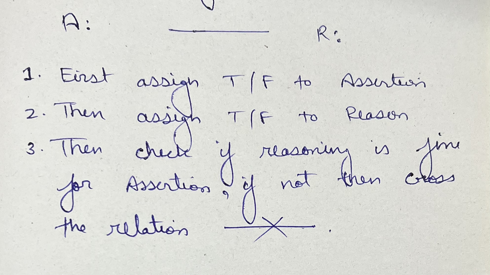
- Mathematics - Number System - Definitions - Digits: - These are the basic symbols used to represent numbers in the Indo-Arabic numeral system, which include 0, 1, 2, 3, 4, 5, 6, 7, 8, and 9. - Significant Digits: - These are the digits from 1 to 9, which contribute to the value of a number. - Insignificant Digit: - The digit 0, when it does not contribute to the value of a number (e.g., leading zeros in 007 are insignificant, but 0 in 205 is significant). - Notation: - This refers to the representation of a number using digits (e.g., the number six hundred forty is written as 640). - Numeration: - This is the representation of a number in words (e.g., the number 640 is written as "six hundred forty"). - Face Value: - The inherent value of a digit regardless of its position in a number (e.g., in the number 3452, the face value of 4 is simply 4). - Place Value (Local Value): - The value of a digit based on its position in a number, calculated by multiplying the digit’s face value by the corresponding power of 10. - Indian Number System: - The places are organized as follows: Ten Crore (\(10^8\)), Crore (\(10^7\)), Ten Lakh (\(10^6\)), Lakh (\(10^5\)), Ten Thousand (\(10^4\)), Thousand (\(10^3\)), Hundred (\(10^2\)), Ten (\(10^1\)), One (\(10^0\)). - Example: - In 12345678, the place value of 2 is \(2 \times 10^6 = 2,000,000\) (20 Lakh in Indian system). - International Number System: - The places are organized as: Hundred Million (\(10^8\)), Ten Million (\(10^7\)), Million (\(10^6\)), Hundred Thousand (\(10^5\)), Ten Thousand (\(10^4\)), Thousand (\(10^3\)), Hundred (\(10^2\)), Ten (\(10^1\)), One (\(10^0\)). - Example: - In 12345678, the place value of 2 is \(2 \times 10^6 = 2,000,000\) (2 Million in International system). - Types of Numbers: - Natural Numbers (N): - These are the counting numbers starting from 1: \(\{1, 2, 3, \ldots\}\). - The smallest natural number is 1, and there is no largest natural number. - Whole Numbers (W): - These include all natural numbers plus zero: \(\{0, 1, 2, \ldots\}\). - Integers (I): - These include negative numbers, zero, and positive numbers: \(\{\ldots, -3, -2, -1, 0, 1, 2, \ldots\}\). - Zero is neither positive nor negative. - Rational Numbers: - Numbers that can be expressed as a fraction \(\frac{p}{q}\), where \(p\) and \(q\) are integers and \(q \neq 0\). - Examples: - \(\frac{1}{2}\), 5 (as \(\frac{5}{1}\)), \(-\frac{3}{4}\). - Irrational Numbers: - Numbers that cannot be expressed as a fraction \(\frac{p}{q}\), typically non-repeating, non-terminating decimals. - Examples: - \(\sqrt{2}\), \(\pi\), \(e\). - Real Numbers: - All numbers on the number line, encompassing both rational and irrational numbers. - Complex Numbers: - A complex number is a number that has two parts, a real part and an imaginary part, it is written as - a + bi, where - a = real part (normal number) - b = coefficient of imaginary part - i = imaginary unit, defined as i² = −1 - Why do complex numbers exist? - Because some equations cannot be solved using only real numbers. - Example: - x² + 1 = 0 → x² = −1 - No real number squared equals −1. - No real number squared gives −1, so mathematicians defined “i” to handle such cases. - Even Numbers: - Numbers divisible by 2, including zero (e.g., 0, 2, 4, 6, …). - Odd Numbers: - Numbers not divisible by 2 (e.g., 1, 3, 5, 7, …). - Prime Numbers: - Numbers greater than 1 that are divisible only by 1 and themselves (e.g., 2, 3, 5, 7, 11, …). - Properties: - All prime numbers are positive. - 0 is not a prime number. - 1 is not a prime number (it has only one factor). - 2 is the only even prime number. - The smallest odd prime number is 3. - For any prime number \(p \leq 5\), when divided by 6, the remainder is either 1 or 5 (e.g., for 5: \(5 \div 6 = 0\) remainder 5). - Prime Number Test: - To determine if a number \(P\) is prime: - 1. Find a whole number \(x\) such that \(x > \sqrt{P}\). - 2. List all prime numbers less than or equal to \(x\). - 3. If none of these primes divide \(P\) exactly (remainder 0), then \(P\) is prime; otherwise, it is not. - Example: - For \(P = 29\), \(\sqrt{29} \approx 5.39\), so \(x = 6\). Primes \(\leq 6\): 2, 3, 5. Check: 29 is not divisible by 2, 3, or 5, so 29 is prime. - Twin Primes: - A pair of prime numbers that differ by 2. - Examples: - (3, 5), (5, 7), (11, 13), (17, 19), (29, 31) - Composite Numbers: - Numbers greater than 1 that have more than two factors (e.g., 4, 6, 8, 9, …). - Co-prime Numbers: - Two numbers whose highest common factor (HCF) is 1 (e.g., 4 and 9, since their factors are 4: {1, 2, 4} and 9: {1, 3, 9}, HCF = 1). - Perfect Squares: - Numbers that are squares of integers (e.g., 1 = \(1^2\), 4 = \(2^2\), 9 = \(3^2\), 16 = \(4^2\), …). - Perfect Cubes: - Numbers that are cubes of integers (e.g., 1 = \(1^3\), 8 = \(2^3\), 27 = \(3^3\), …). - Operations on Numbers: - 1. Addition: - Combining two or more numbers. - Symbol: - + - Example: - 24 + 25 + 30 = 79 - 2. Subtraction: - Taking one or more numbers out of a larger number. - Symbol: - - - Example: - 400 - 223 = 177 - 3. Division: - Four components: - (i) Dividend: - The number being divided - (ii) Divisor: - The number dividing the dividend - (iii) Quotient: - The result of the division - (iv) Remainder: - The leftover part - Formula: - Dividend = (Divisor × Quotient) + Remainder - Symbol: - ÷ or / - Example: - 225 ÷ 25 = 9 - 4. Multiplication: - One number added repeatedly the number of times indicated by another. - Symbol: - × or * - Example: - 2 × 4 = 8 or (2 + 2 + 2 + 2) = 8 or (4 + 4) = 8 - Modular Arithmetic: - Some basics - What is mod? - Mod just means - “What is left over after division?” - What is triple-bar sign (≡): - It means congruence or identity - Division Formula (Basic Identity): - Any division statement follows: - \( \text{Dividend} = (\text{Divisor} \times \text{Quotient}) + \text{Remainder} \) - Example: - \( 17 = 5 \cdot 3 + 2 \) - CSAT usage: - Find largest or smallest number satisfying divisibility condition. - Find the largest 4-digit number divisible by 7 - Step 1 – Identify the largest 4-digit number: - 9999 - Step 2 – Divide by 7 and find remainder: - 9999 ÷ 7 = 1428 remainder 3 - Step 3 – Subtract remainder to get nearest divisible number: - 9999 - 3 = 9996 - Step 4 – Conclude: - Largest 4-digit number divisible by 7 = 9996 - Find the smallest 3-digit number divisible by 13 - Step 1 – Identify the smallest 3-digit number: - 100 - Step 2 – Divide by 13 and find remainder: - 100 ÷ 13 = 7 remainder 9 - Step 3 – Add difference to get divisible number: - 100 + (13 - 9) = 104 - Step 4 – Conclude: - Smallest 3-digit number divisible by 13 = 104 - Remainder Theorem: - When you divide \(a\) by \(b\), you can always write: - \( a = bq + r,\quad 0 \le r < b \) - where \(q\) is the quotient and \(r\) is the remainder. - CSAT usage: - Quickly find remainder of large numbers without full division. - Find remainder when 9876 is divided by 13 - Break down: - \(9876 = 9800 + 76\) - Compute remainders separately: - \( 9800 \bmod 13 = 11, \quad 76 \bmod 13 = 11 \) - Combine using addition property: - \( (9800 \bmod 13 + 76 \bmod 13) \bmod 13 = (11 + 11) \bmod 13 = 22 \bmod 13 = 9 \) - Remainder = 9 - Addition: - Rule: - \( (a + b) \bmod n = \left[(a \bmod n) + (b \bmod n)\right] \bmod n \) - Code reference - We can't use "%" to replace "mod" in real maths, but reference is just to get clarity - In coding the above expression can be written as: - (a + b) % n = ((a % n) + (b % n)) % n - Intuition: - Write both numbers in remainder form: - \( a = nA + r_a,\qquad b = nB + r_b \) - Add: - \( a + b = n(A + B) + (r_a + r_b) \) - The term \(n(A+B)\) is a multiple of \(n\), so it becomes \(0\) in modulo-\(n\). - Only the remainder sum \(r_a + r_b\) matters. - CSAT Usage: - Combine multiple numbers under modulo without full sum. - Find remainder when 12345 + 6789 is divided by 7 - \( 12345 \bmod 7 = 4, \quad 6789 \bmod 7 = 0 \) - \( (12345 + 6789) \bmod 7 = (4 + 0) \bmod 7 = 4 \) - Multiplication: - Rule: - \( (a \cdot b) \bmod n = \left[(a \bmod n)(b \bmod n)\right] \bmod n \) - Code reference - We can't use "%" to replace "mod" in real maths, but reference is just to get clarity - In coding the above expression can be written as: - (a.b) % n = ((a % n) . (b % n)) % n - Intuition: - Write: - \( a = nA + r_a,\qquad b = nB + r_b \) - Multiply: - \( ab = (nA + r_a)(nB + r_b) \) - \( ab = n^2 AB + nAr_b + nB r_a + r_a r_b \) - The first three terms are multiples of \(n\), so modulo-\(n\) they vanish. - Only the product of remainders \(r_a r_b\) affects the final remainder. - CSAT usage: - Simplify multiplication under modulo. - Find remainder when 234 × 567 is divided by 9 - \( 234 \bmod 9 = 0, \quad 567 \bmod 9 = 0 \) - \( (234 \cdot 567) \bmod 9 = (0 \cdot 0) \bmod 9 = 0 \) - Fermat’s Little Theorem: - If \(p\) is prime and \(a\) is not divisible by \(p\), then: - \( a^{p-1} \equiv 1 \pmod p \) - Formula explanation - Compare \( a^{p-1} \) and \( 1 \) using the rule “modulo \(p\)”. If they are congruent, it means: - \( a^{p-1} \) and \( 1 \) leave the same remainder when divided by \(p\). - When you take the number \(a\), raise it to the power \(p-1\), and then look at its remainder when divided by \(p\), the remainder will always be \(1\), as long as \(p\) is prime and \(a\) is not a multiple of \(p\). - Intuition: - The numbers \(1,2,\ldots,p-1\) form a perfect multiplicative cycle under mod \(p\). - Multiplying \(a\) repeatedly cycles through the same set. - After exactly \(p-1\) multiplications, it returns to \(1\). - CSAT usage: - Quickly find remainder of large exponents with prime divisor using Fermat’s Little Theorem. - Find remainder when \(7^{222}\) is divided by 13 - Step 1 – Identify values: - \(a = 7\) (base), \(p = 13\) (prime divisor) - Step 2 – Apply Fermat’s Little Theorem: - Since \(p = 13\) is prime and \(7\) is not divisible by 13: - \( 7^{12} \equiv 1 \pmod {13} \) - Step 3 – Express exponent in multiples of \(p-1\): - Basically express by divisor formula by dividing with (p-1) - \(222 = 12 \times 18 + 6\) - \( 7^{222} = 7^{12\cdot 18 + 6} = (7^{12})^{18} \cdot 7^6 \) - Step 4 – Replace \(7^{12} \equiv 1\) using Fermat: - \( (7^{12})^{18} \cdot 7^6 \equiv 1^{18} \cdot 7^6 \equiv 7^6 \pmod {13} \) - Step 5 – Compute smaller power modulo 13: - \(7^6 = 117649 \equiv 9 \pmod {13}\) - Step 6 – Conclude: - Remainder = 9 - Wilson’s Theorem: - For any prime \(p\): - \( (p-1)! \equiv -1 \pmod p \) - Formula explanation - Compare \((p-1)!\) and \(-1\) using modulo \(p\). - If they are congruent, it means: - \((p-1)!\) and \(-1\) leave the same remainder when divided by \(p\). - Intuition: - In mod \(p\), every number \(1\) to \(p-1\) has a unique multiplicative inverse. - Almost all numbers pair up with their inverse and multiply to \(1\). - Only two numbers do not pair: - \(1\) (self-inverse) - \(p - 1 \equiv -1 \pmod p\) (also self-inverse) - Thus: - \( (p-1)! = 1 \cdot (p-1) \equiv -1 \pmod p \) - CSAT usage: - Quickly find remainder of (p-1)! when divided by a prime p using Wilson’s Theorem. - Find remainder of 10! when divided by 11 - Step 1 – Identify values: - \(p = 11\) (prime divisor) - Compute \((p-1)! = 10!\) - Step 2 – Apply Wilson’s Theorem: - For a prime p: - \((p-1)! \equiv -1 \pmod p\) - So: - \( 10! \equiv -1 \pmod {11} \) - Step 3 – Convert negative remainder to positive: - In modulo arithmetic, \(-1 \equiv p-1 \pmod p\) - \(-1 \equiv 11-1 = 10 \pmod {11}\) - Step 4 – Conclude: - Remainder = 10 - VBODMAS Rule: - Order of Operations: 1. Vinculum (Bar): - Solve expressions under a bar first. 2. Brackets: - Solve in order of (), {}, []. 3. Order/Exponential form: - Interpret as multiplication (e.g., 2 of 3 = \(2 \times 3\)). 4. Division: - Perform division operations. 5. Multiplication: - Perform multiplication operations. 6. Addition: - Perform addition operations. 7. Subtraction: - Perform subtraction operations. - Simplification Tip: - Break complex expressions into smaller parts, solve brackets first, and use modular arithmetic for large numbers to simplify calculations. - Example: - Simplify \(2 + 3 \times (4 - 1)^2\): First, \(4 - 1 = 3\), then \(3^2 = 9\), then \(3 \times 9 = 27\), finally \(2 + 27 = 29\). - Divisibility Rules: - By 2: - Last digit is 0, 2, 4, 6, or 8. - Example: - 246 is divisible by 2 (last digit is 6). - By 3: - Sum of digits is divisible by 3. - Example: - 123, sum = \(1 + 2 + 3 = 6\), which is divisible by 3. - By 4: - Number formed by the last two digits is divisible by 4. - Example: - 1232, last two digits 32, \(32 \div 4 = 8\), so divisible. - By 5: - Last digit is 0 or 5. - Example: - 125 is divisible by 5 (last digit is 5). - By 6: - Number is divisible by both 2 and 3. - Example: - 18 is divisible by 2 (even) and 3 (\(1 + 8 = 9\)), so divisible by 6. - By 7: - Difference between twice the unit digit and the number formed by other digits is 0 or a multiple of 7. - Example: - 658, unit digit = 8, twice unit digit = \(2 \times 8 = 16\), other digits = 65, difference = \(65 - 16 = 49\), which is divisible by 7. - By 8: - Number formed by the last three digits is divisible by 8. - Example: - 1232, last three digits 232, \(232 \div 8 = 29\), so divisible. - By 9: - Sum of digits is divisible by 9. - Example: - 234, sum = \(2 + 3 + 4 = 9\), divisible by 9. - By 10: - Last digit is 0. - Example: - 120 is divisible by 10. - By 11: - Difference between the sum of digits in odd positions and even positions is 0 or a multiple of 11. - Example: - 30426, odd positions (1st, 3rd, 5th): \(3 + 4 + 6 = 13\), even positions (2nd, 4th): \(0 + 2 = 2\), difference = \(13 - 2 = 11\), divisible by 11. - By 12: - Number is divisible by both 3 and 4. - Example: - 24 is divisible by 3 (\(2 + 4 = 6\)) and 4 (\(24 \div 4 = 6\)), so divisible by 12. - By 13: - Multiply the last digit by 9, add it to the rest of the number. - If the result is divisible by 13, so is the original number. - Example: - 273 → last digit 3 → \(3 × 9 = 27\); add to 27 → \(27 + 27 = 54\); \(54 ÷ 13 = 4.15\) → not divisible. - 351 → last digit 1 → \(1 × 9 = 9\); add to 35 → \(35 + 9 = 44\); \(44 ÷ 13 = 3.38\) → not divisible. - 585 → last digit 5 → \(5 × 9 = 45\); add to 58 → \(58 + 45 = 103\); \(103 ÷ 13 = 7.92\) → divisible (13×8=104, so close enough). - By 14: - Number divisible by both 2 and 7. - Example: - 686 → even (divisible by 2), also passes 7-rule (\(68 - 2×6 = 56\) → divisible by 7). - By 15: - Number divisible by both 3 and 5. - Example: - 90 → ends with 0 (divisible by 5) and \(9 + 0 = 9\) divisible by 3. - By 16: - Last 4 digits form a number divisible by 16. - Example: - 8512 → last 4 digits 8512 → \(8512 ÷ 16 = 532\). - By 17: - Subtract 5 times the last digit from the remaining number. - If result divisible by 17, so is the number. - Example: - 595 → last digit 5 → \(5×5=25\); \(59 - 25 = 34\); \(34 ÷ 17 = 2\). - By 18: - Number is even and divisible by 9. - Example: - 18 is even and divisible by 9 (\(1 + 8 = 9\)), so divisible by 18. - By 19: - Add twice the last digit to the rest of the number. - If the result is divisible by 19, so is the number. - Example: - 133 → last digit 3 → \(3×2=6\); add to 13 → \(13 + 6 = 19\). - By 20: - Last two digits form a number divisible by 20 (i.e., end with 00, 20, 40, 60, or 80). - Example: - 840 → ends with 40 → divisible by 20. - By 25: - Last two digits form a number divisible by 25 or are 00. - Example: - 125, last two digits 25, divisible by 25. - By 88: - Number is divisible by both 11 and 8. - Example: - 352, divisible by 8 (\(352 \div 8 = 44\)) and 11 (odd sum: \(3 + 2 = 5\), even sum: 5, difference: \(5 - 5 = 0\)). - By 99: - Number is divisible by both 9 and 11. - Example: - 198, divisible by 9 (\(1 + 9 + 8 = 18\)) and 11 (odd sum: \(1 + 8 = 9\), even sum: 9, difference: \(9 - 9 = 0\)). - By 125: - Last three digits form a number divisible by 125 or are 000. - Example: - 1125, last three digits 125, divisible by 125. - Useful Properties of Numbers: - Property 1: - The difference of the squares of any two odd numbers is always divisible by 8. - Example: - \(5^2 - 3^2 = 25 - 9 = 16 = 8 \times 2\) - \(11^2 - 3^2 = 121 - 9 = 112 = 8 \times 14\) - Property 2: - The sum of any two consecutive numbers is equal to the difference of their squares. - Example: - \(3 + 4 = 7 = 4^2 - 3^2\) - \(6 + 7 = 13 = 7^2 - 6^2\) - Property 3: - The sum of the cubes of any three consecutive numbers is divisible by the sum of the numbers themselves. - Example: - \(2^3 + 3^3 + 4^3 = 8 + 27 + 64 = 99\) - Sum = \(2 + 3 + 4 = 9\), and \(99 = 9 \times 11\) - Property 4: - If \(p\) divides both \(q\) and \(r\), then \(p\) also divides their sum or difference. - Example: - 4 divides 12 and 20 - \(12 + 20 = 32\), divisible by 4 - \(20 - 12 = 8\), also divisible by 4 - Property 5: - If a number is divisible by another number, then it must also be divisible by each factor of that number. - Example: - 48 is divisible by 12 - Factors of 12: 1, 2, 3, 4, 6, 12 - So 48 is divisible by 2, 3, 4, 6 - Property 6: - Product of three consecutive numbers is always divisible by 6. - Example: - \(1 \times 2 \times 3 = 6\) - Any such product always divisible by both 2 and 3 → hence divisible by 6 - Property 7: - \((x^m - a^m)\) is divisible by \((x - a)\) for all values of \(m\) - Property 8: - \((x^m - a^m)\) is divisible by \((x + a)\) for even values of \(m\) - Property 9: - \((x^m + a^m)\) is divisible by \((x + a)\) for odd values of \(m\) - Property 10: - If a number when divided by \(x\) leaves remainder \(y\), then when the same number is divided by a factor \(a\) of \(x\), the remainder is \(y \mod a\) - Number of Digits and Unit Digits: - Number of Digits in \(N = b^k\): - \( \text{Number of digits} = \lfloor k \cdot \log_{10} b \rfloor + 1 \) - Example: - For \(2^{10}\), \(\log_{10} 2 \approx 0.3010\), so \(\lfloor 10 \times 0.3010 \rfloor + 1 = \lfloor 3.01 \rfloor + 1 = 4\) digits. - Unit Digit of Large Powers: - Concept: - The unit digit of powers of any number depends only on the unit digit of its base. - This is because the higher digits of the base don’t affect the multiplication pattern of the last digit. - As powers increase, the unit digits repeat in a cyclic pattern, forming what’s called a *cycle of unit digits*. - Why Cycles Form: - Since there are only 10 possible unit digits (0–9), repetition must occur. - Once the same unit digit reappears, the cycle restarts. - Hence, powers of any number repeat their last digits periodically. - Step-by-Step Method to Find the Unit Digit of \( a^n \): - Step 1: - Determine the last digit of base \( a \). - Step 2: - Write down the sequence of unit digits for successive powers of that digit until the pattern repeats. - This sequence is the cycle. - Step 3: - Compute \( n \mod \text{(cycle length)} \) to find the position of the required term within the cycle. - Step 4: - If remainder = 0, use the last element of the cycle. - Otherwise, use the element at the remainder’s position. - Step 5: - The corresponding element gives the unit digit of \( a^n \). - Cycles of Unit Digits (for bases ending in 0–9): - 0: - Powers: - 0¹ = 0, 0² = 0, 0³ = 0, ... - Cycle = {0} → Cycle length = 1 - Unit digit always remains 0 - 1: - Powers: - 1¹ = 1, 1² = 1, 1³ = 1, ... - Cycle = {1} → Cycle length = 1 - Unit digit always remains 1 - 2: - Powers: - 2¹ = 2, 2² = 4, 2³ = 8, 2⁴ = 16, 2⁵ = 32, ... - Unit digits = {2, 4, 8, 6} - Cycle = {2, 4, 8, 6} → Cycle length = 4 - 3: - Powers: - 3¹ = 3, 3² = 9, 3³ = 27, 3⁴ = 81, 3⁵ = 243, ... - Unit digits = {3, 9, 7, 1} - Cycle = {3, 9, 7, 1} → Cycle length = 4 - 4: - Powers: - 4¹ = 4, 4² = 16, 4³ = 64, 4⁴ = 256, ... - Unit digits = {4, 6} - If unit digit odd, then 4, or else 6 - Cycle = {4, 6} → Cycle length = 2 - 5: - Powers: - 5¹ = 5, 5² = 25, 5³ = 125, ... - Unit digits: {5} - Cycle = {5} → Cycle length = 1 - Unit digit always remains 5 - 6: - Powers: - 6¹ = 6, 6² = 36, 6³ = 216, ... - Unit digits = {6} - Cycle = {6} → Cycle length = 1 - Unit digit always remains 6 - 7: - Powers: - 7¹ = 7, 7² = 49, 7³ = 343, 7⁴ = 2401, ... - Unit digits = {7, 9, 3, 1} - Cycle = {7, 9, 3, 1} → Cycle length = 4 - 8: - Powers: - 8¹ = 8, 8² = 64, 8³ = 512, 8⁴ = 4096, ... - Unit digits = {8, 4, 2, 6} - Cycle = {8, 4, 2, 6} → Cycle length = 4 - 9: - Powers: - 9¹ = 9, 9² = 81, 9³ = 729, 9⁴ = 6561, ... - Unit digits = {9, 1} - If unit digit odd, then 9, or else 1 - Cycle = {9, 1} → Cycle length = 2 - 10: - Powers: - 10¹ = 10, 10² = 100, 10³ = 1000, ... - Unit digits = {0} - Cycle = {0} → Cycle length = 1 - Unit digit always remains 0 - Complex Cases of Unit Digits (Large Bases and Exponents): - Rule 1: - Only the unit digit of the base matters, not the entire number. - Reason: - The higher digits do not affect the product’s last digit. - Example: - \(2137^{2138}\) → base ends with 7 → same as \(7^{2138}\) - \(674^{209}\) → base ends with 4 → same as \(4^{209}\) - \(99^{120}\) → base ends with 9 → same as \(9^{120}\) - Rule 2: - Find the unit digit cycle for the base’s last digit (from the 0–9 pattern list). - Example: - For 7 → cycle = {7, 9, 3, 1} → cycle length = 4 - For 8 → cycle = {8, 4, 2, 6} → cycle length = 4 - For 9 → cycle = {9, 1} → cycle length = 2 - Thus: - \(2137^{2138}\) → 7-cycle (length 4) - \(2138^{2139}\) → 8-cycle (length 4) - \(2139^{2137}\) → 9-cycle (length 2) - Rule 3 (Key Shortcut for Bases Ending with 4 or 9): - These digits have cycles of length 2: - 4 → {4, 6} - 9 → {9, 1} - So: - If the exponent is odd, unit digit = first element of the cycle. - If the exponent is even, unit digit = second element. - Shortcut: - Base ends with 4 → odd → 4, even → 6 - Base ends with 9 → odd → 9, even → 1 - Examples: - \(2134^{2137}\) → base ends with 4, exponent odd → unit digit = 4 - \(2134^{2138}\) → base ends with 4, exponent even → unit digit = 6 - \(2139^{2137}\) → base ends with 9, exponent odd → unit digit = 9 - \(2139^{2138}\) → base ends with 9, exponent even → unit digit = 1 - Rule 4 (For Bases Ending in 2, 3, 7, or 8): - These digits have cycles of length 4. - Use \( n \mod 4 \) to find the position in the cycle: - If remainder = 0 → take 4th element. - Else → take element at remainder’s position. - Examples: - \(2137^{2138}\) - Base ends with 7 → cycle {7, 9, 3, 1} - \(2138 \mod 4 = 2\) → 2nd element = 9 → unit digit = 9 - \(2138^{2139}\) - Base ends with 8 → cycle {8, 4, 2, 6} - \(2139 \mod 4 = 3\) → 3rd element = 2 → unit digit = 2 - \(2232^{109}\) - Base ends with 2 → cycle {2, 4, 8, 6} - \(109 \mod 4 = 1\) → 1st element = 2 → unit digit = 2 - \(9233^{210}\) - Base ends with 3 → cycle {3, 9, 7, 1} - \(210 \mod 4 = 2\) → 2nd element = 9 → unit digit = 9 - Example 1: - \(6789^{4567^{8910}}\) - Step 1: - Base ends with 9 → cycle = {9, 1} → length = 2 - Step 2: - Exponent = \(4567^{8910}\) - Since 4567 is odd and any odd number raised to any power remains odd, exponent is odd → exponent mod 2 = 1 - Step 3: - For base 9: odd exponent → 1st term of cycle = 9 - Therefore: - Unit digit = 9 - \(217^{219^{220}}\) - Step 1: - Only the unit digit of the base matters. - Base = 217 → ends with 7. - So we focus on \(7^{219^{220}}\). - Step 2: - The unit digit cycle for 7 is: - 7¹ → 7 - 7² → 9 - 7³ → 3 - 7⁴ → 1 - Hence, cycle = {7, 9, 3, 1}, and cycle length = 4. - Step 3: - We need to know which element of the cycle applies. - For that, we find: - Exponent = \(219^{220}\) - We only need \(219^{220} \mod 4\). - Step 4: - Since 219 ÷ 4 gives remainder 3 (because 4×54=216, remainder 3), - Base ≡ 3 (mod 4) - Now find \(3^{220} \mod 4\): - \(3^{220} \mod 4\) is just mathmatical alternative to represent \(219^{220}\) - Pattern of 3ⁿ mod 4 → {3, 1, 3, 1} → repeats every 2. - Since exponent 220 is even → remainder = 1. - Hence \(219^{220} \mod 4 = 1\). - Step 5: - Remainder 1 → means 1st element of the cycle {7, 9, 3, 1}. - Therefore: - Unit digit = 7 - Rule 5 (Special Note for Bases Ending in 0, 1, 5, 6): - These always yield the same unit digit, regardless of power. - 0 → always 0 - 1 → always 1 - 5 → always 5 - 6 → always 6 - Examples: - \(350^{2138}\) → last digit = 0 → unit digit = 0 - \(251^{999}\) → last digit = 1 → unit digit = 1 - \(125^{500}\) → last digit = 5 → unit digit = 5 - \(216^{84}\) → last digit = 6 → unit digit = 6 - Important Notes: - Any number ending in 0, 1, 5, or 6 will always have the same unit digit for any power. - The rest (2, 3, 4, 7, 8, 9) show repeating patterns with cycle lengths 2 or 4. - Knowing these saves time in competitive exams. - Additional Concepts: - Recurring Decimals: - For a fraction \(\frac{p}{q}\), if \(q\) is coprime with 10 (i.e., not divisible by 2 or 5), the decimal expansion is recurring. - The period is the smallest \(k\) such that \(10^k \equiv 1 \mod q\). - Example: - \(\frac{1}{7} = 0.\overline{142857}\), period = 6 (since \(10^6 \equiv 1 \mod 7\)). - Surds: - Simplification rules: - \( \sqrt{a} \cdot \sqrt{b} = \sqrt{ab}, \quad \frac{\sqrt{a}}{\sqrt{b}} = \sqrt{\frac{a}{b}} \) - Rationalizing the denominator: - \( \frac{1}{\sqrt{a}} = \frac{\sqrt{a}}{a} \) - Example: - \(\frac{1}{\sqrt{2}} = \frac{\sqrt{2}}{2}\). - Highest Common Factor (HCF) and Least Common Multiple (LCM): - HCF (Greatest Common Divisor): - The HCF of two or more numbers is the largest number that divides each of them exactly, leaving no remainder. - It represents the highest measure of common divisibility among numbers. - Methods to find HCF: - Prime Factorization Method: - Express each number as a product of primes. - Multiply the common primes raised to their smallest powers. - Example 1: - HCF(36,60) - \(36 = 2^2 \times 3^2\) - \(60 = 2^2 \times 3 \times 5\) - \(\text{HCF} = 2^2 \times 3 = 12\) - Example 2: - HCF(3, 42) - \(3 = 3^1\) - \(42 = 2 \times 3 \times 7\) - \(\text{HCF} = 3^1 = 3\) - Division (or Euclidean) Method: - Found using: \(\text{HCF}(a, b) = \text{HCF}(b, a \bmod b)\) - Continue until the remainder becomes 0. - Example 1: - HCF(48, 18) - \(48 = 18 \times 2 + 12\) - \(18 = 12 \times 1 + 6\) - \(12 = 6 \times 2 + 0\) - \(\text{HCF} = 6\) - For multiple numbers: - Compute stepwise: \(\text{HCF}(a, b, c) = \text{HCF}(\text{HCF}(a, b), c)\) - LCM (Least Common Multiple): - The LCM of two or more numbers is the smallest number that is exactly divisible by each of them. - It represents the lowest shared multiple among the numbers. - Prime Factorization Method: - Express each number as a product of prime factors. - Multiply all primes raised to their highest powers. - Example 1: - LCM(12, 18) - \(12 = 2^2 \times 3\) - \(18 = 2 \times 3^2\) - \(\text{LCM} = 2^2 \times 3^2 = 36\) - Example 2: - LCM(3, 42) - \(3 = 3^1\) - \(42 = 2^1 \times 3^1 \times 7^1\) - \(\text{LCM} = 2^1 \times 3^1 \times 7^1 = 42\) - For multiple numbers: - Compute sequentially: \(\text{LCM}(a, b, c) = \text{LCM}(\text{LCM}(a, b), c)\) - Relationship between HCF and LCM: - \(\text{HCF}(a, b) \times \text{LCM}(a, b) = a \times b\) - \(\text{LCM}(48, 18) = \frac{48 \times 18}{6} = 144\) - This relation helps verify the correctness of computed values. - Number of Divisors: - For a number \(N = p_1^{a} \cdot p_2^{b} \cdot \ldots \cdot p_k^{m}\), the number of divisors is: - \( (a+1)(b+1)\ldots(m+1) \) - Example: - For 12 = \(2^2 \cdot 3^1\), number of divisors = \((2+1)(1+1) = 3 \times 2 = 6\) (divisors: 1, 2, 3, 4, 6, 12). - Sum of Divisors: - For \(N = p_1^{a} \cdot p_2^{b} \cdot \ldots \cdot p_k^{m}\): - \( \sigma(N) = \frac{p_1^{a+1}-1}{p_1-1} \cdot \frac{p_2^{b+1}-1}{p_2-1} \cdot \ldots \cdot \frac{p_k^{m+1}-1}{p_k-1} \) - Example: - For 12 = \(2^2 \cdot 3^1\), sum = \(\frac{2^3-1}{2-1} \cdot \frac{3^2-1}{3-1} = \frac{7}{1} \cdot \frac{8}{2} = 7 \times 4 = 28\). - Euler’s Totient Function (\(\phi(n)\)): - Counts numbers up to \(n\) that are co-prime to \(n\): - \( \phi(n) = n \prod_{p|n} \left(1 - \frac{1}{p}\right) \) - Example: - For \(n = 6 = 2^1 \cdot 3^1\), \(\phi(6) = 6 \left(1 - \frac{1}{2}\right) \left(1 - \frac{1}{3}\right) = 6 \times \frac{1}{2} \times \frac{2}{3} = 2\). (Co-prime numbers: 1, 5). - Fractions - Definition: - A fraction represents a part of a whole, whether it’s an object, quantity, or region. - It is a rational number of the form \(\frac{p}{q}\), where: - \(p\) (numerator): - An integer representing the part. - \(q\) (denominator): - A non-zero integer representing the whole, and \(p\) is not a multiple of \(q\). - Example: - If a stick is divided into 2 equal parts and you have 1 part, this is represented as \(\frac{1}{2}\), meaning 1 out of 2 equal parts. - Types of Fractions: - Proper Fractions: - Fractions where the absolute value is less than 1, i.e., the numerator is less than the denominator (\(| \frac{p}{q} | < 1\)). - Example: - \(\frac{1}{2}\), \(\frac{6}{11}\), \(\frac{3}{7}\). - Improper Fractions: - Fractions where the denominator is less than or equal to the numerator (\(\frac{p}{q} \geq 1\)). - Example: - \(\frac{16}{11}\), \(\frac{21}{16}\), \(\frac{5}{5}\). - Complex Fractions: - Fractions where the numerator, denominator, or both are fractions themselves. - Example: - \(\frac{\frac{5}{7}}{\frac{11}{3}}\), \(\frac{4}{\frac{2}{9}}\). - Simplification: - Multiply numerator and denominator by the LCM of the denominators of the inner fractions. - Example: - For \(\frac{\frac{5}{7}}{\frac{11}{3}}\), multiply by LCM(7, 3) = 21: \(\frac{\frac{5}{7} \times 21}{\frac{11}{3} \times 21} = \frac{5 \times 3}{11 \times 7} = \frac{15}{77}\). - Compound Fractions: - Fractions involving the operation “of” (interpreted as multiplication) between fractions. - Example: - \(\frac{3}{5} \text{ of } \frac{15}{18} = \frac{3}{5} \times \frac{15}{18} = \frac{3 \times 15}{5 \times 18} = \frac{45}{90} = \frac{1}{2}\). - Inverse Fractions: - The reciprocal of a given fraction, obtained by swapping the numerator and denominator. - Example: - For \(\frac{7}{13}\), the inverse is \(\frac{13}{7}\). - Application: - Used in division of fractions (multiply by the inverse). - Mixed Fractions: - A combination of a whole number and a proper fraction. - Example: - \(3 \frac{4}{5} = 3 + \frac{4}{5} = \frac{15 + 4}{5} = \frac{19}{5}\). - Conversion to improper: - Multiply the whole number by the denominator, add the numerator, and place over the denominator. - Continued Fractions: - Fractions with an additional fractional part in the numerator or denominator, often nested. - Example: - \(3 + \frac{1}{1 + \frac{4}{9}}\), \(6 + \frac{7 + \frac{1}{8}}{5}\). - Simplification: - Start from the innermost fraction and work upward. - Example: - For \(3 + \frac{1}{1 + \frac{4}{9}}\): - Inner fraction: - \(1 + \frac{4}{9} = \frac{9 + 4}{9} = \frac{13}{9}\). - Then: - \(\frac{1}{\frac{13}{9}} = \frac{9}{13}\). - Finally: - \(3 + \frac{9}{13} = \frac{39 + 9}{13} = \frac{48}{13}\). - Equivalent Fractions: - Fractions that represent the same value but have different numerators and denominators. - Obtained by multiplying or dividing numerator and denominator by the same non-zero number. - Example: - \(\frac{2}{3} = \frac{2 \times 2}{3 \times 2} = \frac{4}{6} = \frac{4 \div 2}{6 \div 2} = \frac{2}{3}\). - Use: - Simplifying fractions or finding common denominators. - Operations on Fractions: - Addition and Subtraction: - Case 1 - Same Denominator: - Add or subtract the numerators and keep the denominator. - Example: - \(\frac{2}{7} + \frac{3}{7} = \frac{2 + 3}{7} = \frac{5}{7}\), \(\frac{9}{13} - \frac{6}{13} = \frac{9 - 6}{13} = \frac{3}{13}\). - Case 2 - Different Denominators: - Find the LCM of the denominators to get a common denominator. - Convert each fraction to an equivalent fraction with the common denominator, then add or subtract. - Example: - \(\frac{1}{6} + \frac{3}{8}\): - LCM(6, 8) = 24. - Convert: - \(\frac{1}{6} = \frac{1 \times 4}{6 \times 4} = \frac{4}{24}\), \(\frac{3}{8} = \frac{3 \times 3}{8 \times 3} = \frac{9}{24}\). - Add: - \(\frac{4}{24} + \frac{9}{24} = \frac{4 + 9}{24} = \frac{13}{24}\). - Example: - \(\frac{3}{5} - \frac{2}{7}\): - LCM(5, 7) = 35. - Convert: - \(\frac{3}{5} = \frac{3 \times 7}{5 \times 7} = \frac{21}{35}\), \(\frac{2}{7} = \frac{2 \times 5}{7 \times 5} = \frac{10}{35}\). - Subtract: - \(\frac{21}{35} - \frac{10}{35} = \frac{21 - 10}{35} = \frac{11}{35}\). - Multiplication: - Multiply the numerators together and the denominators together, then simplify. - Example: - \(\frac{2}{3} \times \frac{5}{7} = \frac{2 \times 5}{3 \times 7} = \frac{10}{21}\). - Tip: - Simplify before multiplying by canceling common factors. - Example: - \(\frac{4}{5} \times \frac{15}{8} = \frac{4 \times 15}{5 \times 8} = \frac{1 \times 3}{1 \times 2} = \frac{3}{2} = 1.5\) (cancel 5 and 15, 4 and 8). - Division: - Multiply the first fraction by the inverse (reciprocal) of the second fraction. - Example: - \(\frac{3}{4} \div \frac{2}{5} = \frac{3}{4} \times \frac{5}{2} = \frac{3 \times 5}{4 \times 2} = \frac{15}{8}\). - Tip: - Simplify before multiplying to reduce calculations. - Comparison of Fractions: - Rule 1 - Same Denominator: - The fraction with the larger numerator is greater. - Example: - \(\frac{5}{12} > \frac{3}{12}\), since \(5 > 3\). - Rule 2 - Same Numerator: - The fraction with the smaller denominator is greater. - Example: - \(\frac{8}{15} > \frac{8}{17}\), since \(15 < 17\). - Rule 3 - Different Numerators and Denominators: - Method 1 - Cross-Multiplication: - For \(\frac{a}{b}\) and \(\frac{c}{d}\), compare \(a \times d\) and \(b \times c\). - If \(a \times d > b \times c\), then \(\frac{a}{b} > \frac{c}{d}\). - Example: - Compare \(\frac{3}{5}\) and \(\frac{4}{7}\): - Cross-multiply: - \(3 \times 7 = 21\), \(5 \times 4 = 20\). - Since \(21 > 20\), \(\frac{3}{5} > \frac{4}{7}\). - Method 2 - Common Denominator: - Convert fractions to a common denominator (LCM) and compare numerators. - Example: - Compare \(\frac{11}{18}\), \(\frac{113}{173}\), \(\frac{303}{486}\), \(\frac{144}{231}\): - LCM(18, 173, 486, 231) is complex, so use cross-multiplication or decimal approximation for CSAT. - Decimal method: - \(\frac{11}{18} \approx 0.611\), \(\frac{113}{173} \approx 0.653\), \(\frac{303}{486} \approx 0.623\), \(\frac{144}{231} \approx 0.623\). - Compare: - \(0.653 > 0.623 \approx 0.623 > 0.611\), so \(\frac{113}{173} > \frac{303}{486} \approx \frac{144}{231} > \frac{11}{18}\). - CSAT Tip: - For quick comparison, convert to decimals or use cross-multiplication to save time. - Decimal Fractions: - Definition: - Fractions with denominators that are powers of 10, expressed as decimals. - Example: - \(0.25 = \frac{25}{100} = \frac{1}{4}\), \(0.1 = \frac{1}{10}\). - Parts of a Decimal: - Example: - In 13.489, 13 is the integer part, and 0.489 is the decimal part. - Converting Decimals to Fractions: - Steps: 1. Write the decimal without the decimal point as the numerator. 2. Place 1 followed by as many zeros as there are decimal places in the denominator. 3. Simplify the fraction. - Example: - Convert 11.987 to a fraction: - Numerator: - 11987 (remove decimal). - Denominator: - \(10^3 = 1000\) (3 decimal places). - Fraction: - \(\frac{11987}{1000}\). - Terminating vs. Non-Terminating Decimals: - Terminating: - Denominator has only factors 2 and 5. - Example: - \(\frac{1}{4} = 0.25\), \(\frac{3}{8} = 0.375\) (denominators \(2^2\), \(2^3\)). - Non-Terminating (Recurring): - Denominator has factors other than 2 and 5. - Example: - \(\frac{1}{3} = 0.\overline{3}\), \(\frac{1}{7} = 0.\overline{142857}\). - Recurring Decimals: - Definition: - Decimals where a digit or set of digits repeats infinitely, denoted with a bar or dot over the repeating part. - Example: - \(0.\overline{2} = 0.222\ldots\), \(0.\overline{142857} = 0.142857142857\ldots\). - Converting Recurring Decimals into Fractions - CASE 1 - Pure Recurring Decimal - All digits after decimal repeat from the start. - Method: - Multiply by \(10^r\) (where \(r\) = length of repeating block), then subtract original. - Example 1: - \(0.\overline{3}\) - Let \(x = 0.\overline{3}\) - Multiply by 10 (\(r=1\)): - \(10x = 3.\overline{3}\) - Subtract: - \(10x - x = 3\) → \(9x = 3\) - \(x = \frac{3}{9} = \frac{1}{3}\) - Hence, \(0.\overline{3} = \frac{1}{3}\) - Example 2: - \(0.\overline{142857}\) - Let \(x = 0.\overline{142857}\) - Multiply by \(10^6\): - \(1{,}000{,}000x = 142857.\overline{142857}\) - Subtract: - \(999{,}999x = 142857\) - \(x = \frac{142857}{999999} = \frac{1}{7}\) - Hence, \(0.\overline{142857} = \frac{1}{7}\) - CASE 2 - Mixed Recurring Decimal - Non-repeating digits followed by a repeating block. - Case 2 involves 1 extra step of creating equation 2 - Method: - Let \(n\) = number of non-repeating digits - Let \(r\) = length of repeating block - Multiply once by \(10^n\) to shift non-repeating part - Multiply again by \(10^{n+r}\) to shift one full cycle - Subtract the two equations - Example 1: - \(0.12\overline{34}\) - \(n=2\), \(r=2\) - Let \(x = 0.12\overline{34}\) - ×100: - First multiply the original number with this to get equation 1 - \(100x = 12.\overline{34}\) - ×10,000: - Now multiply the original number with this to get equation 2 - \(10{,}000x = 1234.\overline{34}\) - Subtract: - Subtract equation 1 from 2 - \(9{,}900x = 1222\) - \(x = \frac{1222}{9900} = \frac{611}{4950}\) - Hence, \(0.12\overline{34} = \frac{611}{4950}\) - Example 2: - \(2.4\overline{56}\) - \(n=1\), \(r=2\) - Let \(x = 2.4\overline{56}\) - ×10: - First multiply the original number with this to get equation 1 - \(10x = 24.\overline{56}\) - ×1,000: - Now multiply the original number with this to get equation 2 - \(1{,}000x = 2456.\overline{56}\) - Subtract: - Subtract equation 1 from 2 - \(990x = 2432\) - \(x = \frac{2432}{990} = \frac{1216}{495}\) - Hence, \(2.4\overline{56} = \frac{1216}{495}\) - Elementary Algebra - Polynomials: - Definition: - An expression of the form \( f(x) = a_0 + a_1 x + a_2 x^2 + \cdots + a_n x^n \), where: - \( a_0, a_1, a_2, \ldots, a_n \): Constants (coefficients), real numbers, with \( a_n \neq 0 \). - \( n \): A non-negative integer (degree of the polynomial). - Example: - \( 4x^2 + 7x - 9 \) (over integers), \( 7x^3 + \frac{2}{3}x^2 - \frac{7}{5}x + 5 \) (over rationals), \( \sqrt{2}x^2 - \frac{3}{x} + 5 \) (over reals, but not a polynomial due to negative exponent). - Types of Polynomials by Terms: - Monomial: - One term (e.g., \( 7 \), \( 2x \), \( 8x^3 \)). - Binomial: - Two terms (e.g., \( 3x + 4 \), \( 8x^2 - 3x \)). - Trinomial: - Three terms (e.g., \( 7x^2 - 3x + 8 \)). - Degree of a Polynomial: - The highest exponent of \( x \) with a non-zero coefficient. - Example: - \( 5x^3 + 2x^2 - x + 4 \) has degree 3, \( 8 \) (constant) has degree 0. - Types of Polynomials by Degree: - Zero Polynomial: - Degree 0 (e.g., \( f(x) = 8 \)). - Linear Polynomial: - Degree 1 (e.g., \( 3x + 5 \)). - Quadratic Polynomial: - Degree 2 (e.g., \( 4x^2 - 2x + 1 \)). - Cubic Polynomial: - Degree 3 (e.g., \( 2x^3 + x^2 - 3 \)). - Higher-Degree Polynomials: - Degree \( \geq 4 \) (e.g., \( x^4 + 2x \)). - Operations on Polynomials: - Addition/Subtraction: - Combine like terms. - Example: - \( (3x^2 + 2x - 1) + (x^2 - 4x + 5) = 4x^2 - 2x + 4 \). - Multiplication: - Distribute each term and combine like terms. - Example: - \( (2x + 3)(x - 1) = 2x^2 - 2x + 3x - 3 = 2x^2 + x - 3 \). - Division: - Use polynomial long division or synthetic division for linear divisors. - Example: - Divide \( x^2 - 5x + 6 \) by \( x - 2 \): - Synthetic division: - Coefficients \( [1, -5, 6] \), divisor root \( 2 \). - Result: - \( [1, -3, 0] \), quotient \( x - 3 \), remainder 0. - Thus, \( \frac{x^2 - 5x + 6}{x - 2} = x - 3 \). - Zero of a Polynomial (Root of a polynomial): - A real number 'a' is called a zero (or root) of a polynomial f(x) if: - f(a) = 0 - Example: - If x = 1 is a root of polynomial f(x) = 3x³ - 2x² + x - 2, then f(1) = 3(1)³ - 2(1)² + 1 - 2 = 3 - 2 + 1 - 2 = 0 ⇒ x = 1 is a root of f(x) - Properties: - A polynomial of degree 'n' has at most 'n' real roots. - For example: - Degree 1 → at most 1 real root - Degree 2 → at most 2 real roots - Degree 3 → at most 3 real roots - A linear polynomial f(x) = ax + b (where a ≠ 0) has one unique root: x = -b/a - A linear polynomial is degree 1 (highest power of x is 1). Solving ax + b = 0 gives x = -b/a. - Only one solution is possible because the graph of a line cuts the x-axis at exactly one point. - Example: - f(x) = 2x − 6 - Root = 6/2 = 3. - Every real number is a root of the zero polynomial. - The zero polynomial is f(x) = 0. - No matter what x you substitute: - f(x) = 0 for all x - So: - f(a) = 0 for every real number a. - Therefore, every real number is a root. - This is the only polynomial which has infinitely many real roots. - A non-zero constant polynomial has no root. - A constant polynomial looks like -> f(x) = c, where c ≠ 0 - No matter what x you put, f(x) can never become zero. - f(x) = c, and c ≠ 0 - Hence, it has no root. - Example: - f(x) = 5 → never becomes 0 → no root. - Classification by Degree (Illustration): - Polynomial: - 3x² + 4x + 5 - Degree = 2 ⇒ Quadratic polynomial - Polynomial: - 3x⁴ + 3x² + 4x + 4 - Degree = 4 ⇒ Biquadratic polynomial - Remainder Theorem: - Let f(x) be a polynomial of degree ≥ 1 and let 'a' be any real number. If f(x) is divided by (x - a), the remainder = f(a) - Meaning: - Normally, dividing polynomials is long and time-consuming. The Remainder Theorem gives a shortcut: - Instead of dividing, just substitute x = a in the polynomial. - The value f(a) = the remainder. - Example: - f(x) = 2x³ - 13x² + 17x + 10 - Dividing by (x - 2), remainder = f(2) ⇒ f(2) = 2(8) - 13(4) + 17(2) + 10 = 16 - 52 + 34 + 10 = 8 ⇒ Remainder = 8 - Factor Theorem: - Let f(x) be a polynomial of degree ≥ 1. - If f(a) = 0, then (x - a) is a factor of f(x). Conversely, if (x - a) is a factor of f(x), then f(a) = 0 - Example: - Show that (x + 2) is a factor of f(x) = x² + 4x + 4 - f(-2) = (-2)² + 4(-2) + 4 = 4 - 8 + 4 = 0 ⇒ (x + 2) is a factor of f(x) - Important Algebraic Identities: - x² − y² = (x + y)(x − y) - (x + y)² = x² + 2xy + y² - (x - y)² = x² - 2xy + y² - (x + y)³ = x³ + y³ + 3x²y + 3xy² - (x - y)³ = x³ - y³ - 3x²y + 3xy² - x³ + y³ = (x + y)(x²+ y² - xy) - x³ - y³ = (x - y)(x² + y² + xy) - (x + y + z)² = x² + y² + z² + 2(xy + yz + zx) - Linear Equations: - Definition: - Equations of the form \( a_1 x + b_1 y = c_1 \), where \( a_1, b_1, c_1 \) are constants, and the highest degree is 1. - A system of linear equations involves multiple such equations. - Solving Systems of Linear Equations: - Method 1 - Substitution: - Solve one equation for one variable and substitute into the other. - Example: - Solve \( x + 2y = 7 \), \( x - y = 1 \): - From (2): - \( x = y + 1 \). - Substitute into (1): - \( (y + 1) + 2y = 7 \Rightarrow 3y + 1 = 7 \Rightarrow 3y = 6 \Rightarrow y = 2 \). - Substitute \( y = 2 \) into \( x = y + 1 \): - \( x = 2 + 1 = 3 \). - Solution: - \( x = 3 \), \( y = 2 \). - Method 2 - Elimination: - Make coefficients of one variable equal, then add or subtract equations. - Example: - Solve \( 3x - 2y = 11 \), \( 5x + y = 7 \): - Multiply (2) by 2: - \( 10x + 2y = 14 \). - Add to (1): - \( (3x - 2y) + (10x + 2y) = 11 + 14 \Rightarrow 13x = 25 \Rightarrow x = \frac{25}{13} \approx 1.92 \). - Substitute \( x = \frac{25}{13} \) into (2): - \( 5 \cdot \frac{25}{13} + y = 7 \Rightarrow y = 7 - \frac{125}{13} = \frac{91 - 125}{13} = -\frac{34}{13} \approx -2.62 \). - Method 3 - Cross-Multiplication (for two variables): - For \( a_1 x + b_1 y = c_1 \), \( a_2 x + b_2 y = c_2 \): - \( \frac{x}{b_1 c_2 - b_2 c_1} = \frac{y}{c_1 a_2 - c_2 a_1} = \frac{-1}{a_1 b_2 - a_2 b_1} \). - Example: - Solve \( x + 2y = 7 \), \( x - y = 1 \): - Coefficients: - \( a_1 = 1, b_1 = 2, c_1 = 7 \), \( a_2 = 1, b_2 = -1, c_2 = 1 \). - Denominator: - \( a_1 b_2 - a_2 b_1 = 1 \cdot (-1) - 1 \cdot 2 = -1 - 2 = -3 \). - \( x = -\frac{b_1 c_2 - b_2 c_1}{a_1 b_2 - a_2 b_1} = -\frac{2 \cdot 1 - (-1) \cdot 7}{-3} = -\frac{2 + 7}{-3} = \frac{9}{3} = 3 \). - \( y = -\frac{c_1 a_2 - c_2 a_1}{a_1 b_2 - a_2 b_1} = -\frac{7 \cdot 1 - 1 \cdot 1}{-3} = -\frac{7 - 1}{-3} = \frac{6}{3} = 2 \). - Solution: - \( x = 3 \), \( y = 2 \). - Consistency of Systems: - For \( a_1 x + b_1 y + c_1 = 0 \), \( a_2 x + b_2 y + c_2 = 0 \): - Unique solution: - \( \frac{a_1}{a_2} \neq \frac{b_1}{b_2} \). - Infinite solutions: - \( \frac{a_1}{a_2} = \frac{b_1}{b_2} = \frac{c_1}{c_2} \). - No solution: - \( \frac{a_1}{a_2} = \frac{b_1}{b_2} \neq \frac{c_1}{c_2} \). - Example: Check consistency of \( 2x + 3y = 6 \), \( 4x + 6y = 12 \): - Ratios: - \( \frac{a_1}{a_2} = \frac{2}{4} = \frac{1}{2} \), \( \frac{b_1}{b_2} = \frac{3}{6} = \frac{1}{2} \), \( \frac{c_1}{c_2} = \frac{6}{12} = \frac{1}{2} \). - Since \( \frac{1}{2} = \frac{1}{2} = \frac{1}{2} \), infinite solutions. - Applications: - Time and Work: - If A completes a job in 6 days (\( \frac{1}{6} \) per day) and B in 8 days (\( \frac{1}{8} \) per day), solve for combined time using rates. - Mixtures: - Solve for quantities in mixtures using equations based on fractions or percentages. - Quadratic Equations: - Definition: - Equations of the form \( ax^2 + bx + c = 0 \), where \( a, b, c \in \mathbb{R} \), \( a \neq 0 \), and the highest degree is 2. - Roots: - Two values of \( x \) (real or imaginary) that satisfy the equation. - Solving Quadratic Equations: - Method 1 - Factorization: - Express as \( (x - \alpha)(x - \beta) = 0 \), so roots are \( \alpha, \beta \). - Example: - Solve \( x^2 - 10x + 24 = 0 \): - Factor: - \( x^2 - 6x - 4x + 24 = (x - 6)(x - 4) = 0 \). - Roots: - \( x = 6, 4 \). - Method 2 - Quadratic Formula: - Roots: - \( x = \frac{-b \pm \sqrt{b^2 - 4ac}}{2a} \), where \( D = b^2 - 4ac \) is the discriminant. - Derivation: - Start: - \( ax^2 + bx + c = 0 \). - Divide by \( a \): - \( x^2 + \frac{b}{a}x + \frac{c}{a} = 0 \). - Complete the square: - \( x^2 + \frac{b}{a}x = -\frac{c}{a} \). - Add \( \left(\frac{b}{2a}\right)^2 \): - \( x^2 + \frac{b}{a}x + \left(\frac{b}{2a}\right)^2 = \left(\frac{b}{2a}\right)^2 - \frac{c}{a} \). - Simplify: - \( \left(x + \frac{b}{2a}\right)^2 = \frac{b^2 - 4ac}{4a^2} \). - Solve: - \( x + \frac{b}{2a} = \pm \frac{\sqrt{b^2 - 4ac}}{2a} \), so \( x = \frac{-b \pm \sqrt{b^2 - 4ac}}{2a} \). - Example: - Solve \( 9x^2 - 3x - 2 = 0 \): - \( a = 9, b = -3, c = -2 \). - Discriminant: - \( D = (-3)^2 - 4 \cdot 9 \cdot (-2) = 9 + 72 = 81 \). - Roots: - \( x = \frac{3 \pm \sqrt{81}}{18} = \frac{3 \pm 9}{18} \). - \( x_1 = \frac{3 + 9}{18} = \frac{12}{18} = \frac{2}{3} \), \( x_2 = \frac{3 - 9}{18} = -\frac{6}{18} = -\frac{1}{3} \). - Nature of Roots: - Discriminant \( D = b^2 - 4ac \): - \( D > 0 \): - Real and distinct roots (lies on number line). - \( D = 0 \): - Real and equal roots (both solutions are the same number). - \( D < 0 \): - Imaginary roots (not typically tested in CSAT). - If \( D \) is a perfect square, roots are rational; otherwise, irrational. - Example: - For \( x^2 - 10x + 25 = 0 \): - \( D = (-10)^2 - 4 \cdot 1 \cdot 25 = 100 - 100 = 0 \). - Roots are real and equal: - \( x = \frac{10}{2} = 5 \). - Sum and Product of Roots: - For \( ax^2 + bx + c = 0 \), roots \( \alpha, \beta \): - Sum: - \( \alpha + \beta = -\frac{b}{a} \). - Product: - \( \alpha \beta = \frac{c}{a} \). - Example: - For \( x^2 - 10x + 24 = 0 \): - Sum: - \( -\frac{-10}{1} = 10 \). - Product: - \( \frac{24}{1} = 24 \). - Roots satisfy: - \( x_1 + x_2 = 10 \), \( x_1 x_2 = 24 \) (e.g., 6 and 4). - LCM and HCF - Factors: - Definition: - A number \( n \) is a factor of \( N \) if \( N \div n \) is an integer. - Example: - Factors of 12 are 1, 2, 3, 4, 6, 12. - Prime Factors: - Factors that are prime numbers. - Example: - For \( 729 = 9 \times 9 \times 9 = 3^6 \), prime factors are \( 3 \times 3 \times 3 \times 3 \times 3 \times 3 \). - Total Number of Factors: - For a number \( N = p_1^{a} \times p_2^{b} \times p_3^{c} \), where \( p_1, p_2, p_3 \) are distinct primes: - Number of factors = \( (a + 1)(b + 1)(c + 1) \). - Example: - For \( 120 = 2^3 \times 3^1 \times 5^1 \), number of factors = \( (3+1)(1+1)(1+1) = 4 \times 2 \times 2 = 16 \). - Application: - Simplifying fractions by dividing numerator and denominator by their HCF. - Example: - Simplify \( \frac{24}{36} \). HCF of 24 and 36 is 12, so \( \frac{24 \div 12}{36 \div 12} = \frac{2}{3} \). - Multiples: - Definition: - A number \( X \) is a multiple of \( N \) if \( X = k \times N \), where \( k \) is an integer. - Example: - Multiples of 5 are 5, 10, 15, 20, etc. - Common Multiple: - A number divisible by each of a given set of numbers. - Example: - 30 is a common multiple of 2, 3, 5, and 6. - Least Common Multiple (LCM): - Definition: - The smallest number divisible by each of a given set of numbers. - Example: - LCM of 2, 3, 7 is 42. - Methods to Find LCM: - Method 1 - Prime Factorization: - Step 1: - Write each number in prime-factorized form. - Step 2: - List all prime factors appearing in any number. - Step 3: - Take each prime to the highest power present in any number. - Step 4: - Multiply to get LCM. - Example: - Find LCM of 8, 12, 15: - \( 8 = 2^3 \), \( 12 = 2^2 \times 3^1 \), \( 15 = 3^1 \times 5^1 \). - Primes: - 2, 3, 5. - Highest powers: - \( 2^3, 3^1, 5^1 \). - LCM = \( 2^3 \times 3^1 \times 5^1 = 8 \times 3 \times 5 = 120 \). - Method 2 - Division Method: - Step 1: - Write numbers separated by commas. - Step 2: - Divide by the smallest prime that divides at least one number. - Step 3: - Repeat until all quotients are 1. - Step 4: - Multiply all divisors to get LCM. - Example: - Find LCM of 36, 48, 64, 72: -| 2 | 36 | 48 | 64 | 72 |
| 2 | 18 | 24 | 32 | 36 |
| 2 | 9 | 12 | 16 | 18 |
| 2 | 9 | 6 | 8 | 9 |
| 2 | 9 | 3 | 4 | 9 |
| 2 | 9 | 3 | 2 | 9 |
| 3 | 9 | 3 | 1 | 9 |
| 3 | 3 | 1 | 1 | 3 |
| 1 | 1 | 1 | 1 |
| n | n² |
|---|---|
| 11 | 121 |
| 12 | 144 |
| 13 | 169 |
| 14 | 196 |
| 15 | 225 |
| 16 | 256 |
| 17 | 289 |
| 18 | 324 |
| 19 | 361 |
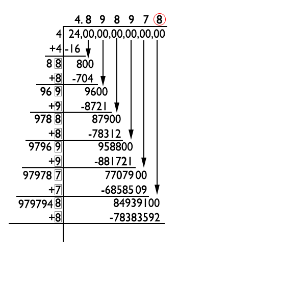
-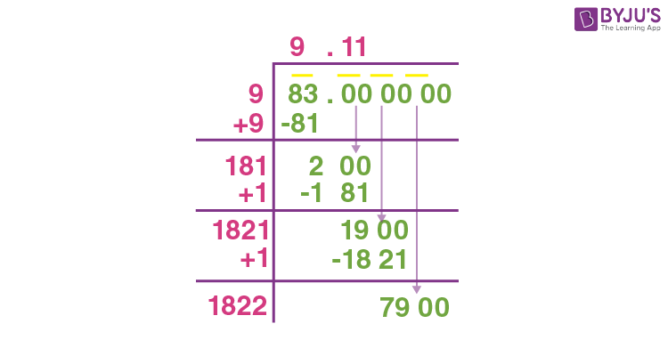
- Cubes: - Definition: - The cube of a number is the result of multiplying it by itself thrice: \( n^3 = n \times n \times n \). - Example: - \( 5^3 = 5 \times 5 \times 5 = 125 \). - Properties: - A perfect cube’s prime factorization has powers that are multiples of 3. - Cubes of numbers > 1 are greater than the number; cubes of numbers between 0 and 1 are less than the number. - Cube of a negative number is negative: \( (-n)^3 = -n^3 \). - Cube root of a cube ending with 1, 4, 5, 6, 9, 0, 2, 3, 7, 8 ends with 1, 4, 5, 6, 9, 0, 8, 7, 3, 2, respectively. - Cube Roots: - Definition: - The cube root of a number \( x \) is a number \( y \) such that \( y^3 = x \), denoted \( \sqrt[3]{x} \). - Example: - \( \sqrt[3]{125} = 5 \), since \( 5^3 = 125 \). - Methods to Find Cube Root: - Prime Factorization (only for perfect cubes): - Factorize the number, divide the exponents by 3, and take the product. - Example: - Find \( \sqrt[3]{614125} \): - \( 614125 = 5^3 \times 7^3 \). - \( \sqrt[3]{614125} = 5 \times 7 = 35 \). - Approximation for Large Numbers: - Group digits in sets of three from the right. - Use the first group for the tens digit and the last digit for the units digit. - Example: - Find \( \sqrt[3]{614125} \): - 614 lies between \( 8^3 = 512 \) and \( 9^3 = 729 \), so tens digit is 8. - Last digit 5 implies units digit is 5 (since \( 5^3 = 125 \)). - Answer is: 85. - Properties related to roots - \( \sqrt{ab} = \sqrt{a} \times \sqrt{b} \) - Example: - \( \sqrt{36 \times 4} = \sqrt{36} \times \sqrt{4} = 6 \times 2 = 12 \) - \( \frac{\sqrt{a}}{\sqrt{b}} = \sqrt{\frac{a}{b}} \) (when \( b \neq 0 \)) - Example: - \( \frac{\sqrt{9}}{\sqrt{4}} = \sqrt{\frac{9}{4}} = \frac{3}{2} \) - \( \sqrt{a^2} = |a| \) - Example: - \( \sqrt{(-5)^2} = \sqrt{25} = 5 \) - \( \sqrt{a + b} \neq \sqrt{a} + \sqrt{b} \) - Example: - \( \sqrt{9 + 16} = \sqrt{25} = 5 \), but \( \sqrt{9} + \sqrt{16} = 3 + 4 = 7 \) - Rationalizing the denominator: - Example: - Rationalize \( \frac{1}{\sqrt{2}} \): - Multiply by \( \frac{\sqrt{2}}{\sqrt{2}} \): - \( \frac{1}{\sqrt{2}} \times \frac{\sqrt{2}}{\sqrt{2}} = \frac{\sqrt{2}}{2} \) - Surds: - Definition: - A surd is an irrational number expressed as \( \sqrt[n]{a} \), where \( a \) is rational and \( \sqrt[n]{a} \) is irrational. - The word comes from the Latin word surdus, which means "deaf" or "mute" (silent). early mathematicians literally thought of these numbers as "mute" or "voiceless" because they couldn't be expressed as a simple ratio of integers. - Example: - \( \sqrt{2} \), \( \sqrt[3]{5} \). - Types: - Simple Surd: - Single term, e.g., \( \sqrt{3} \), \( 4\sqrt{2} \). - Mixed Surd: - Rational + surd, e.g., \( 2 + \sqrt{3} \). - Compound Surd: - Sum or difference of surds, e.g., \( \sqrt{3} + \sqrt{7} \). - Similar Surds: - Multiples of the same surd, e.g., \( 2\sqrt{3} \), \( 5\sqrt{3} \). - Dissimilar Surds: - Different surds, e.g., \( \sqrt{2} \), \( \sqrt{3} \). - Rationalization: - Multiply a surd by its conjugate to make it rational. While the denominator becomes rational, the entire number usually remains irrational. - Example: - Rationalize \( \frac{1}{\sqrt{3}} \): - Multiply by \( \frac{\sqrt{3}}{\sqrt{3}} \): \( \frac{1}{\sqrt{3}} \times \frac{\sqrt{3}}{\sqrt{3}} = \frac{\sqrt{3}}{3} \). - For \( a + \sqrt{b} \), conjugate is \( a - \sqrt{b} \). - Example: - Rationalize \( \frac{1}{2 + \sqrt{3}} \): - Multiply by \( \frac{2 - \sqrt{3}}{2 - \sqrt{3}} \): \( \frac{1}{2 + \sqrt{3}} \times \frac{2 - \sqrt{3}}{2 - \sqrt{3}} = \frac{2 - \sqrt{3}}{4 - 3} = 2 - \sqrt{3} \). - Comparison of Surds: - Surds must be of the same order. Convert to the same order using LCM of indices. - Example: - Compare \( \sqrt{5} \) and \( \sqrt[3]{4} \): - Convert to order 6: \( \sqrt{5} = 5^{1/2} = 5^{3/6} = \sqrt[6]{5^3} = \sqrt[6]{125} \), \( \sqrt[3]{4} = 4^{1/3} = 4^{2/6} = \sqrt[6]{4^2} = \sqrt[6]{16} \). - Since \( 125 > 16 \), \( \sqrt{5} > \sqrt[3]{4} \). - Laws of Surds (Roots): - \( \sqrt{ab} = \sqrt{a} \cdot \sqrt{b} \) - Example: \( \sqrt{9 \cdot 4} = \sqrt{9} \cdot \sqrt{4} = 3 \cdot 2 = 6 \) - \( \sqrt{\frac{a}{b}} = \frac{\sqrt{a}}{\sqrt{b}} \) (where \( b \neq 0 \)) - Example: \( \sqrt{\frac{25}{4}} = \frac{\sqrt{25}}{\sqrt{4}} = \frac{5}{2} \) - \( \sqrt[n]{a^m} = (a^m)^{\frac{1}{n}} = a^{\frac{m}{n}} \) - Example: \( \sqrt[3]{8^2} = (8^2)^{1/3} = 64^{1/3} = 4 \) - \( a^{\frac{m}{n}} = \sqrt[n]{a^m} \) = \( (\sqrt[n]{a})^m \) - Example: \( 27^{2/3} = (\sqrt[3]{27})^2 = 3^2 = 9 \) - \( \sqrt[n]{a} = a^{\frac{1}{n}} \) - Example: \( \sqrt[4]{16} = 16^{1/4} = 2 \) - Rationalizing: - Example: - Rationalize \( \frac{1}{\sqrt{5}} \): - Multiply by \( \frac{\sqrt{5}}{\sqrt{5}} \): - \( \frac{1}{\sqrt{5}} \times \frac{\sqrt{5}}{\sqrt{5}} = \frac{\sqrt{5}}{5} \) - Indices (Exponents): - Definition: - An index (or exponent) represents how many times a number (base) is multiplied by itself. - If \( x^n \), then: - \( x \) is the base. - \( n \) is the exponent/index. - It means \( x \) is multiplied by itself \( n \) times. - Example: - \( 2^4 = 2 \times 2 \times 2 \times 2 = 16 \) - Laws of Indices (Exponents): - \( a^m \times a^n = a^{m+n} \) - Example: - \( 2^3 \times 2^4 = 2^{3+4} = 2^7 = 128 \) - \( \frac{a^m}{a^n} = a^{m-n} \) (where \( a \neq 0 \)) - Example: - \( \frac{5^6}{5^2} = 5^{6-2} = 5^4 \) - \( (a^m)^n = a^{mn} \) - Example: - \( (3^2)^4 = 3^{2 \times 4} = 3^8 \) - \( a^0 = 1 \) (where \( a \neq 0 \)) - Example: - \( 7^0 = 1 \) - \( a^{-n} = \frac{1}{a^n} \) (where \( a \neq 0 \)) - Example: - \( 2^{-3} = \frac{1}{2^3} = \frac{1}{8} \) - \( (ab)^m = a^m \times b^m \) - Example: - \( (2 \cdot 3)^4 = 2^4 \cdot 3^4 = 16 \cdot 81 = 1296 \) - \( \left(\frac{a}{b}\right)^m = \frac{a^m}{b^m} \) (where \( b \neq 0 \)) - Example: - \( \left(\frac{2}{3}\right)^2 = \frac{2^2}{3^2} = \frac{4}{9} \) - Profit, Loss and Discount - Cost Price (CP): - Definition: - The price at which an article is purchased, including any overhead expenses (e.g., transportation, repairs, labor, commission). - Actual CP = Purchase Price + Overhead Expenses. - Note: - Overhead expenses are included only when explicitly mentioned in the question. - Example: - A shopkeeper buys a chair for ₹500 and spends ₹50 on transportation. Actual CP = ₹500 + ₹50 = ₹550. - Selling Price (SP): - Definition: - The price at which an article is sold. - Example: - If the chair (CP = ₹550) is sold for ₹700, then SP = ₹700. - Marked Price (MP): - Definition: - The price listed on an article, before any discounts. - Relationship: - MP is typically higher than CP to allow for profit after discounts. - Example: - A pen has MP = ₹15, sold after 20% discount. - SP = ₹\( 15 \times \frac{100 - 20}{100} = 12 \). - Profit: - Definition: - Profit is earned when SP > CP. - Profit = SP - CP. - Profit percentage formula: - \( \text{Profit Percentage} = \frac{\text{SP} - \text{CP}}{\text{CP}} \times 100 \) or - \( \text{Profit Percentage} = \frac{\text{Profit}}{\text{CP}} \times 100 \) - Example: - For CP = ₹550, SP = ₹700: - Profit = ₹700 - ₹550 = ₹150. - Profit % = \( \frac{150}{550} \times 100 \approx 27.27\% \). - Loss: - Definition: - Loss is incurred when CP > SP. - Loss = CP - SP. - Loss percentage formula: - \( \text{Loss Percentage} = \frac{\text{CP} - \text{SP}}{\text{CP}} \times 100 \) or - \( \text{Loss Percentage} = \frac{\text{Loss}}{\text{CP}} \times 100 \) - Example: - For CP = ₹550, SP = ₹500: - Loss = ₹550 - ₹500 = ₹50. - Loss % = \( \frac{50}{550} \times 100 \approx 9.09\% \). - Discount: - Definition: - The reduction allowed on the marked price of an article is called a discount. - Discount is always calculated on the marked price (MP). - Discount percentage formula: - \( \text{Discount Percentage} = \frac{\text{MP} - \text{SP}}{\text{MP}} \times 100 \) or - \( \text{Discount Percentage} = \frac{\text{Discount}}{\text{MP}} \times 100 \) - Doubt resolution - Whenever in doubt weather profit/loss/discount had MP or SP in denominator, just use the percentage change formula to figure out the denominator - Key Formulas: - Selling Price (SP) = Marked Price (MP) - Discount - Discount = Marked Price - Selling Price - Example: - Marked Price = ₹1000, Discount = 10% - Selling Price = ₹\( \frac{(100 - 10)}{100} \times 1000 = 0.9 \times 1000 = 900 \) - Discount = ₹1000 - ₹900 = ₹100 - Successive Discounts: - Definition: - Multiple discounts applied sequentially on the reduced price after each discount. - For successive discounts a%, b%, c%, ...: - Step 1: Calculate net multiplier: - Net multiplier = \( \left( 1 + \frac{a}{100} \right)\left( 1 + \frac{b}{100} \right)\left( 1 + \frac{c}{100} \right) \) - Take \( a, b, c \) with signs (+ for increase, − for decrease) - Step 2: Calculate net percentage change: - Net percentage change = \( (\text{Net multiplier} - 1) \times 100\% \) - Example: - For successive discounts of 10% and 20%: - \( \text{Net multiplier} = \left( 1 + \frac{10}{100} \right)\left( 1 + \frac{20}{100} \right) = 1.1 \times 1.2 = 1.32 \) - Net percentage change: - \( \text{Net % change} = (1.32 - 1) \times 100\% = 32\% \) - Advanced Concepts: - Always loss scenario: - Definition: - If a single article undergoes two successive percentage changes, first an increase of x% and then a decrease of x%, and this always results in a net loss. - This also hold true for: - Two articles with same SP, one sold at x% profit, other at x% loss, always results in a net loss. - Formula - Net Loss % = \( \frac{x^2}{100} \). - Derivation - Base assumption: - Let the initial price = 100 - We know that, new percentage formula is: - \( \text{New Value} = \text{Original Value} \times \left(1 + \frac{x}{100}\right) \) - Sign changes based on weather x is positive or negative. - After +x%: - New value = \( 100 \times \left(1 + \frac{x}{100}\right) = 100 + x \) - After −x%: - New value = \( (100 + x)\left(1 - \frac{x}{100}\right) \) - Expanding: - \( (100 + x)\left(1 - \frac{x}{100}\right) = (100 + x)\frac{100 - x}{100} \) - \( = \frac{10000 - x^2}{100} \) - Final value: - \( = 100 - \frac{x^2}{100} \) - Final value is less than initial base price of 100. - Net loss: - \( = 100 - \left(100 - \frac{x^2}{100}\right) = \frac{x^2}{100} \) - If the base price had been 200, then this would have turned out to be \( \frac{2x^2}{100} \) - Net Loss %: - \( \text{Net Loss %} = \frac{x^2}{100} \) - Example: - Two articles sold at SP = ₹100 each, one with 20% profit, other with 20% loss: - Loss % = \( \frac{20^2}{100} = 4\% \). - Dishonest Dealer: - A dealer uses faulty weights or measures to cheat customers. - Example: - A dealer uses a 900g weight instead of 1kg, sells at CP per kg, claims no profit/loss: - True CP = ₹100 for 1kg, but sells 900g for ₹100. - Effective CP - CP per gram: - \( \text{CP per gram} = \frac{100}{1000} = 0.1 \) - CP for 900 g: - \( \text{Effective CP of 900 g} = 900 \times 0.1 = 90 \) - Profit % = \( \frac{100 - 90}{90} \times 100 \approx 11.11\% \). - Successive Profit and Loss: - Example: - A product is sold at 20% profit, then the buyer sells it at 25% profit: - If CP = ₹100, first SP = ₹\( 100 \times 1.2 = 120 \). - Second SP = ₹\( 120 \times 1.25 = 150 \). - Net profit % = \( \frac{150 - 100}{100} \times 100 = 50\% \). - Break-Even Point: - When CP = SP, no profit or loss. - Example: - CP = ₹100, discount = 20% on MP. Find MP for no profit/loss: - SP = CP = ₹100 = \( \text{MP} \times \frac{100 - 20}{100} \) - MP = ₹\( \frac{100 \times 100}{80} = 125 \) - Ratio, Proportion, Partnership and Mixture - Ratio: - Definition: - A ratio is a comparison of two or more quantities of the same kind by division. - In any ratio, multiplying or dividing all terms by the same non-zero number does not change the ratio. - For two quantities: - \( a : b \) represents the fraction \( \frac{a}{b} \). - Here, \(a\) is called the antecedent and \(b\) the consequent. - For three or more quantities: - \( a : b : c \) or \( a : b : c : d \) does not represent a single fraction. - Instead, it is represented by a system of proportional fractions: - For a : b : c: - First pair: - \( \frac{a}{b} \) - Second pair: - \( \frac{b}{c} \) - All must be equal: - \( \frac{a}{b} = \frac{b}{c} \) - For a : b : c : d: - First pair: - \( \frac{a}{b} \) - Second pair: - \( \frac{b}{c} \) - Third pair: - \( \frac{c}{d} \) - All must be equal: - \( \frac{a}{b} = \frac{b}{c} = \frac{c}{d} \) - Classification of Ratios: - Simple Ratio: - Comparison of two quantities (e.g., \( 3:5 \)). - Compound Ratio: - Product of two or more ratios (e.g., for \( a:b \), \( c:d \), compound ratio = \( a \times c : b \times d \)). - Example: - Compound ratio of \( 2:3 \) and \( 4:5 \) = \( 2 \times 4 : 3 \times 5 = 8:15 \). - Duplicate Ratio: - Square of a ratio (e.g., for \( a:b \), duplicate = \( a^2:b^2 \)). - Reciprocal Ratio: - Inverse of a ratio (e.g., for \( a:b \), reciprocal = \( b:a \)). - Relation Among Two Quantities: - Direct Relation: - If one quantity increases, the other increases (e.g., more workers, more work). - Inverse Relation: - If one quantity increases, the other decreases (e.g., more speed, less time). - Dividing a Quantity in a Given Ratio: - Statement: - If a total quantity \( A \) is to be divided among two or more parts in a given ratio, then each part can be found by multiplying the total \( A \) by its share in the ratio and dividing by the sum of all ratio terms. - Formula: - For ratio \( a_1:a_2 \), sum \( A \): - Quantities = \( \frac{a_1 A}{a_1 + a_2} \), \( \frac{a_2 A}{a_1 + a_2} \). - For three quantities in \( a_1:a_2:a_3 \), sum \( A \): - Quantities = \( \frac{a_1 A}{a_1 + a_2 + a_3} \), \( \frac{a_2 A}{a_1 + a_2 + a_3} \), \( \frac{a_3 A}{a_1 + a_2 + a_3} \). - Derivation: - Step 1: Represent quantities using a common multiplier - \( a_1 x \) - \( a_2 x \) - Step 2: Use the given sum - \( a_1 x + a_2 x = A \) - \( x (a_1 + a_2) = A \) - \( x = \frac{A}{a_1 + a_2} \) - Step 3: Substitute for x - First quantity: - \( a_1 x = \frac{a_1 A}{a_1 + a_2} \) - Second quantity: - \( a_2 x = \frac{a_2 A}{a_1 + a_2} \) - Example: - Ratio 20:39, sum 295. Find numbers: - First = \( \frac{20}{20 + 39} \times 295 = \frac{20}{59} \times 295 = 100 \). - Second = \( \frac{39}{59} \times 295 = 195 \). - Answer is: 100, 195. - Ratio Transformation by Equal Addition: - Statement: - If two numbers are in the ratio \( a:b \), and after adding the same number to both they become \( c:d \), then the added number can be determined using a fixed algebraic formula. - Formula: - \( k = \frac{ad - bc}{\,c - d\,} \) - Derivation: - Step 1: Represent the two numbers - \( ax \) - \( bx \) - Step 2: Add the same number k to both - \( ax + k \) - \( bx + k \) - Step 3: Form the new ratio - \( \frac{ax + k}{bx + k} = \frac{c}{d} \) - \( d(ax + k) = c(bx + k) \) - \( adx + dk = bcx + ck \) - \( adx - bcx = ck - dk \) - \( x(ad - bc) = k(c - d) \) - \( k = \frac{x(ad - bc)}{c - d} \) - Step 4: Take x = 1 - It's common for both numerator and denominator and cancels out - \( k = \frac{ad - bc}{c - d} \) - Example: - Two numbers are in ratio 5:7, find the number to add to both to make the ratio 3:4. - a = 5, b = 7, c = 3, d = 4 - Apply formula: - \( \frac{(5 \times 4) - (7 \times 3)}{3 - 4} = \frac{20 - 21}{-1} = \frac{-1}{-1} = 1 \) - Answer is: - Add 1 to both numbers. - Ratio Transformation by Equal Subtraction: - Statement: - If two numbers are in the ratio \( a:b \), and after subtracting the same number from both they become \( c:d \), then the subtracted number can be determined using a fixed algebraic formula. - Formula - \( \frac{ad - bc}{d - c} \) - Derivation: - Step 1: Represent the two numbers - \( ax \) - \( bx \) - Step 2: Subtract the same number k from both - \( ax - k \) - \( bx - k \) - Step 3: Form the new ratio - \( \frac{ax - k}{bx - k} = \frac{c}{d} \) - \( d(ax - k) = c(bx - k) \) - \( adx - dk = bcx - ck \) - \( adx - bcx = dk - ck \) - \( x(ad - bc) = k(d - c) \) - \( k = \frac{x(ad - bc)}{d - c} \) - Step 4: Take x = 1 - It's common for both numerator and denominator and cancels out - \( k = \frac{ad - bc}{d - c} \) - Example: - Two numbers are in ratio 5:7, find the number to subtract from both to make the ratio 3:4. - a = 5, b = 7, c = 3, d = 4 - Apply formula: - \( \frac{(5 \times 4) - (7 \times 3)}{3 - 4} = \frac{20 - 21}{-1} = \frac{-1}{-1} = 1 \) - Answer is: - Subtract 1 from both numbers. - Proportion: - Definition: - Proportion is just a fancy word for “two ratios are equal.” - Represented as: - \( a:b::c:d \) - or - \( a:b = c:d \) - Where \( a \times d = b \times c \) - Extremes (\( a, d \)), means (\( b, c \)). - Classification of Proportions: - Direct Proportion: - If one quantity increases, the other increases (e.g., \( x \propto y \)). - More input, more output (e.g., more workers, more work). - Inverse Proportion: - If one quantity increases, the other decreases (e.g., \( x \propto \frac{1}{y} \)). - More input, less output (e.g., more workers, fewer days). - Continued Proportion: - \( a:b::b:c \), so \( b^2 = a \times c \). - Mean Proportion: - \( a:x::x:b \), so \( x = \sqrt{a b} \). - Fourth Proportion: - \( a:b::c:x \), so \( x = \frac{b \times c}{a} \). - Properties: - Invertendo: - \( a:b::c:d \implies b:a::d:c \). - Alternendo: - \( a:b::c:d \implies a:c::b:d \). - Componendo: - \( a:b::c:d \implies (a+b):b::(c+d):d \). - Dividendo: - \( a:b::c:d \implies (a-b):b::(c-d):d \). - Componendo-Dividendo: - \( a:b::c:d \implies (a+b):(a-b)::(c+d):(c-d) \). - Example: - Find fraction \( x \) such that \( x:\frac{3}{7} = \frac{1}{5}:\frac{7}{15} \): - \( \frac{x}{\frac{3}{7}} = \frac{\frac{1}{5}}{\frac{7}{15}} \). - \( x = \frac{3}{7} \times \frac{1}{5} \times \frac{15}{7} = \frac{9}{49} \). - Answer is: - \( \frac{9}{49} \). - Unitary Method: - Definition: - Find value of one unit, then scale to required quantity using direct or inverse proportion. - Example: - Cost of 15 eggs = ₹75. Find cost of 5 dozen eggs: - Cost per egg = \( \frac{75}{15} = 5 \). - 5 dozen = \( 5 \times 12 = 60 \) eggs. - Cost = ₹\( 60 \times 5 = 300 \). - Answer is: - ₹300. - Partnership: - Definition: - Two or more persons invest money to run a business, sharing profits/losses based on investment and time. - Formulae: - The ratio of profits \( P_1 : P_2 \) in a partnership is equal to the product of investment and time: - \( P_1 : P_2 = x_1 \times t_1 : x_2 \times t_2 \) - Where \( x_i \) = investment, \( t_i \) = time - Derivation of Partnership Profit Formula: - Step 1: Find proportionality - Profit is directly proportional to investment: - \( P \propto x \) - Profit is directly proportional to time: - \( P \propto t \) - Combining both proportionalities: - \( P \propto x \times t \) - \( P = k x t \) - Step 2: For two partners: - \( P_1 = k x_1 t_1 \) - \( P_2 = k x_2 t_2 \) - Step 3: Take ratio of their profits: - \( \frac{P_1}{P_2} = \frac{k x_1 t_1}{k x_2 t_2} \) - \( \frac{P_1}{P_2} = \frac{x_1 t_1}{x_2 t_2} \) - Step 4: Write in ratio form: - \( P_1 : P_2 = x_1 t_1 : x_2 t_2 \) - Types of partnerships: - Simple Partnership: - Equal time - Compound Partnership: - Different times - Kinds of Partners: - This information does not matter at all for calculations, it's just here so that if question tries to confuse then I am aware of this. - Active Partner: - Manages business. - Sleeping Partner: - Invests money only. - Examples: - Example 1: - Problem statement: - A and B invest in the ratio \(4:3\). - Solution: - A invests for \(1\) year and B invests for \(2\) years. - We know that: - \( P_1 : P_2 = x_1 t_1 : x_2 t_2 \) - Calculate: - \( P_1 : P_2 = (4 \times 1) : (3 \times 2) = 4 : 6 \) - Example 2: - Problem statement: - Three partners invest a total of \(80{,}000\) in a business. - Their respective profits at the end of the year are \(18{,}000, 30{,}000,\) and \(48{,}000\). - Find the investment of the second partner. - Solution: - Let the investments of the three partners be \(x_1, x_2, x_3\). - Since all partners invest for the same duration, let the time be \(t\) for each. - Using the partnership formula: - \(P_1 : P_2 : P_3 = x_1 t : x_2 t : x_3 t\) - Cancelling t: - \(P_1 : P_2 : P_3 = x_1 : x_2 : x_3\) - Calculating investment ratio: - \(18{,}000 : 30{,}000 : 48{,}000 = x_1 : x_2 : x_3\) - \(3 : 5 : 8 = x_1 : x_2 : x_3\) - This gives us the ratio of investment, now we just have to translate this ratio into amounts - Using unitary method - Total ratio parts: - \(3 + 5 + 8 = 16\) - Value of one part: - \(\frac{80{,}000}{16} = 5{,}000\) - Calculate decond partner’s investment: - \(x_2 = 5 \times 5{,}000 = 25{,}000\) - Allegation: - Definition: - Allegation is a method used to find the ratio in which different ingredients must be mixed so that their weighted average (mean) becomes a given value. - Calculation: - Given: - Prices of items = \( p_1, p_2, p_3, \ldots, p_n \) - Mean (mixture) price = \( m \) - Let: - Quantities of items = \( q_1, q_2, q_3, \ldots, q_n \) - Step 1: Classify each item by price relative to the mean: - If \( p_i < m \) → Cheaper item (negative deviation) - If \( p_i > m \) → Dearer item (positive deviation) - Step 2: Compute deviation from the mean for each item: - For each cheaper item \( p_i < m \): - Downward deviation = \( m - p_i \) - For each dearer item \( p_j > m \): - Upward deviation = \( p_j - m \) - Step 3: Compute total deviations on each side: - Total cheaper deviation: - \( D_C = \sum (m - p_i) \) for all cheaper items \( p_i < m \) - Total dearer deviation: - \( D_D = \sum (p_j - m) \) for all dearer items \( p_j > m \) - Step 4: Apply mean-balance (cross-allegation) rule: - Apply as: - For sample: - \( q_1, q_2 \) -> cheaper - \( q_3 \) -> dearer - \( q_1 : q_2 : q_3 = D_D : D_D : D_C \) - Derivation - The arithmetic mean requires: - Total downward pull from cheaper items = Total upward pull from dearer items - i.e., \( \sum q_i (m - p_i) = \sum q_j (p_j - m) \) - This can be represented as: - For sample: - \( q_1, q_2 \) -> cheaper - \( q_3 \) -> dearer - Balance condition of arithmetic mean for 3 items is: - \( q_1 d_1 + q_2 d_2 = q_3 d_3 \) - This equation must hold so that the mixture price is exactly m. - But this equation has infinitely many solutions as \( q_1, q_2, q_3 \) can take infinite values. - One of those infinite solution is to: - Take: - \( q_1 = q_2 = d_3 \) - \( q_3 = d_1 + d_2 \) - Which makes LHS = RHS: - \( d_3 d_1 + d_3 d_2 = (d_1 + d_2) d_3 \) - So, the quantities which satisfy the mixture are in ratio: - \( q_1 : q_2 : q_3 = d_3 : d_3 : (d_1 + d_2) \) - Or - \( q_1 : q_2 : q_3 = D_D : D_D : D_C \) - Step 5: So, the final ratio can be considered: - \( q_1 : q_2 : q_3 = D_D : D_D : D_C \) - Examples - Example 1 (2 quantities): - Problem: - Rice at ₹7.50/kg and ₹10/kg is mixed to get a mixture worth ₹8.25/kg. - Find the ratio in which the two types are mixed. - Given: - Prices = 7.50, 10 - Mean price \( m = 8.25 \) - Step 1: Classify relative to mean: - 7.50 < 8.25 → Cheaper - 10 > 8.25 → Dearer - Step 2: Compute deviations from mean: - \(10 - 8.25 = 1.75\) - \(8.25 - 7.50 = 0.75\) - Step 3: Compute total deviations: - Total cheaper deviation = \(0.75\) - Total dearer deviation = \(1.75\) - Step 4: Apply cross-allegation: - Quantity of cheaper = dearer deviation = \(1.75\) - Quantity of dearer = cheaper deviation = \(0.75\) - Step 5: Write ratio: - Cheaper rice : Rearer rice = \( 1.75 : 0.75\) - Step 6: Convert to whole numbers: - Multiply both by 4: - \(1.75 \times 4 : 0.75 \times 4 = 7 : 3\) - Final Answer: - Cheaper : Dearer = \(7 : 3\) - Example 2 (3 quantities): - Problem: - Milk at ₹20, ₹25 and ₹30 per litre are mixed to get a mixture worth ₹26 per litre. - Find the ratio in which the three are mixed. - Given: - Prices = 20, 25, 30 - Mean price \( m = 26 \) - Step 1: Classify relative to mean: - 20 < 26 → Cheaper - 25 < 26 → Cheaper - 30 > 26 → Dearer - Step 2: Compute deviations from mean: - \(30 - 26 = 4\) - \(26 - 20 = 6\) - \(26 - 25 = 1\) - Step 3: Compute total deviations: - Total cheaper deviation = \(6 + 1 = 7\) - Total dearer deviation = \(4\) - Why they don't cancel out? - According to fundamentals, total cheaper deviation cancels out total dearer deviation, then why don't it cancel out here? - This is because we have not yet decided how much of each milk is used. As soon as quantities are pegged to these values, they will cancel out. - Step 4: Apply cross-allegation: - Quantity of each cheaper = deviation of dearer side = \(4\) - Quantity of dearer = sum of deviations of cheaper side = \(7\) - Step 5: Write ratio: - \(20 : 25 : 30 = 4 : 4 : 7\) - Step 6: Verification: - \( \frac{20 \times 4 + 25 \times 4 + 30 \times 7}{4 + 4 + 7} = \frac{390}{15} = 26 \) - Replacement (Dilution): - Definition: - Replacement refers to the process where a certain quantity of liquid is removed from a container and replaced with another liquid. - With each replacement, the proportion of the original liquid decreases. - Formula: - Amount of original liquid left after \( n \) replacements = \( x \left(1 - \frac{y}{x}\right)^n \) - Derivation: - Given: - Capacity of container = original liquid = \( x \) - Quantity removed and replaced each time = \( y \) - Number of replacements = \( n \) - Step 1: First replacement: - Fraction removed = \( \frac{y}{x} \) - Fraction remaining = \( 1 - \frac{y}{x} \) - Original liquid quality left: - Original quantity * Remaining fraction - Or - \( x \left(1 - \frac{y}{x}\right) \) - Step 2: Second replacement: - The same fraction \( \frac{y}{x} \) of the remaining liquid is removed. - Original liquid left: - \( x \left(1 - \frac{y}{x}\right)\left(1 - \frac{y}{x}\right) = x \left(1 - \frac{y}{x}\right)^2 \) - Step 3: After \( n \) replacements: - Original liquid left: - \( x \left(1 - \frac{y}{x}\right)^n \) - Example: - A vessel contains 100 litres of milk. - 10 litres is removed and replaced with water each time. - This is done 3 times. - Given: - \( x = 100 \) - \( y = 10 \) - \( n = 3 \) - Calculate: - \( 100 \left(1 - \frac{10}{100}\right)^3 \) - \( = 100 (0.9)^3 \) - \( = 100 \times 0.729 \) - \( = 72.9 \) litres - So, after 3 replacements, 72.9 litres of milk remains. - Time and Work - Basic Concept: - Definition: - Work is considered 1 unit (e.g., digging a trench, filling a tank). - If a person completes a work in \( n \) days, work done per day = \( \frac{1}{n} \). - Number of days = \( \frac{1}{\text{Work done in one day}} \). - Core Proportionality Concepts: - People \( \propto \) Work - More people → more work done. - Fewer people → less work done. - People \( \propto \frac{1}{\text{Time}} \) - More people → less time needed to complete work. - Fewer people → more time required. - Time \( \propto \) Work - More time → more work done. - Less time → less work done. - Work Rate Formulae: - Individual Work Rate: - Definition: - Work rate = \( \frac{1}{\text{Time taken}} \). - Example: - A man completes a job in 15 days. Find work done per day: - Work rate = \( \frac{1}{15} \). - Answer is: - \( \frac{1}{15} \) of the work per day. - Combined Work Rate: - Definition: - Multiple workers combine their work rates to complete a job. - Total work rate = Sum of individual rates. - Example: - A, B, C take 12, 15, 20 days respectively. Find time taken together: - Combined rate = \( \frac{1}{12} + \frac{1}{15} + \frac{1}{20} = \frac{5 + 4 + 3}{60} = \frac{12}{60} = \frac{1}{5} \). - Time = \( \frac{1}{\frac{1}{5}} = 5 \) days. - Answer is: - 5 days. - Man-Days Concept: - Definition: - Total work = (Number of men) × (Days) × (Hours per day). - If \( M_1 \) men work \( D_1 \) days for \( H_1 \) hours to complete work \( W_1 \), and \( M_2 \) men work \( D_2 \) days for \( H_2 \) hours for work \( W_2 \), then: - \( W \propto M \times D \times H \) - \( \frac{W_1}{W_2} = \frac{M_1 D_1 H_1}{M_2 D_2 H_2} \) - \( M_1 D_1 H_1 W_2 = M_2 D_2 H_2 W_1 \) - Example: - 12 men complete a job in 10 days, working 8 hours/day. Find days for 15 men working 6 hours/day: - Man-days = \( 12 \times 10 \times 8 = 960 \). - Days = \( \frac{960}{15 \times 6} = \frac{960}{90} \approx 10.67 \). - Answer is: - Approximately 10.67 days. - Efficiency of Workers: - Definition: - Efficiency is proportional to work rate (e.g., if A takes 10 days, B takes 20 days, A is twice as efficient). - Efficiency ratio = Inverse of time ratio. - Example: - A is 25% more efficient than B. B takes 20 days. Find A’s time: - Efficiency ratio = 125:100 = 5:4. - Time ratio = 4:5. - A’s time = \( \frac{4}{5} \times 20 = 16 \) days. - Answer is: - 16 days. - Additional Manpower: - Definition: - Adjust workforce to meet a deadline, accounting for hours/day or remaining work. - Use man-days formula to balance work. - Example: - 20 men work 8 hours/day for 10 days and complete \( \frac{2}{5} \) of a job. Find the additional men needed to finish the remaining work in 5 more days working 10 hours/day: - Given: - \( M_1 = 20,\; D_1 = 10,\; H_1 = 8,\; W_1 = \frac{2}{5} \) - Remaining work \( = \frac{3}{5} \) - \( D_2 = 5,\; H_2 = 10,\; M_2 = ? \) - Let the additional men required be \( x \): - Total men in the second phase = \( M_2 = M_1 + x \) Or - \( M_2 = 20 + x \) - Since work is proportional to men, days and hours: - \( W \propto M \times D \times H \) - Form the ratio: - \( \frac{\text{Remaining Work}}{\text{Work Done}} = \frac{M_2 D_2 H_2}{M_1 D_1 H_1} \) - Substitute values: - \( \frac{\frac{3}{5}}{\frac{2}{5}} = \frac{(20+x)\times 5 \times 10}{20 \times 10 \times 8} \) - Simplify: - \( \frac{3}{2} = \frac{20 + x}{32} \) - \( 48 - 20 = 28 \) - Final answer is: - \( 28 \) men - Pipes and Cisterns: - Definition: - Inlet pipe fills a tank; outlet pipe empties it. - If inlet fills in \( a \) hours, rate = \( \frac{1}{a} \). - If outlet empties in \( b \) hours, rate = \( -\frac{1}{b} \). - Net rate = \( \frac{1}{a} - \frac{1}{b} \). - Net rate = \( \frac{1}{\text{Time to fill/empty}} \). - Example: - Pipe A fills a tank in 10 hours, Pipe B empties it in 15 hours. Find time to fill an empty tank if both are open: - Net rate = \( \frac{1}{10} - \frac{1}{15} = \frac{3 - 2}{30} = \frac{1}{30} \). - Time = \( \frac{1}{\frac{1}{30}} = 30 \) hours. - Answer is: - 30 hours. - Pipes and Cisterns with Partial Tank: - Definition: - Tank starts partially full/empty; calculate time to fill/empty with inlet/outlet pipes. - Adjust initial work and use net rate. - Example: - Tank is \( \frac{1}{3} \) full. Pipe A fills in 9 hours, Pipe B empties in 6 hours. Find time to empty: - Net rate = \( \frac{1}{9} - \frac{1}{6} = \frac{2 - 3}{18} = -\frac{1}{18} \). - Work to empty = \( \frac{1}{3} \). - Time = \( \frac{\frac{1}{3}}{\frac{1}{18}} = \frac{1}{3} \times 18 = 6 \) hours. - Answer is: - 6 hours. - Speed, Time and Distance - Basic Concepts: - Definition: - Speed = \( \frac{\text{Distance}}{\text{Time}} \). - Unit conversions: - km/h to m/s: - Multiply by \( \frac{5}{18} \). - m/s to km/h: - Multiply by \( \frac{18}{5} \). - Example: - A car travels 240 km at 60 km/h. Find time taken: - Time = \( \frac{240}{60} = 4 \) hours. - Answer is: - 4 hours. - Average Speed: - Definition: - Average speed = \( \frac{\text{Total distance}}{\text{Total time}} \). - Applies to varying speeds or distances. - Formula - \( \text{Average speed} = \frac{d_1 + d_2 + \cdots + d_n}{\frac{d_1}{v_1} + \frac{d_2}{v_2} + \cdots + \frac{d_n}{v_n}} \) - Example: - A cyclist travels 30 km at 15 km/h and 40 km at 20 km/h. Find average speed: - Time for 30 km = \( \frac{30}{15} = 2 \) hours. - Time for 40 km = \( \frac{40}{20} = 2 \) hours. - Average speed = \( \frac{30 + 40}{2 + 2} = \frac{70}{4} = 17.5 \) km/h. - Answer is: - 17.5 km/h. - Train-Based Problems: - Core Formula: - Speed = \( \frac{\text{Distance}}{\text{Time}} \) - Distance = Train Length + Object/Bridge Length (when applicable) - Case 1 - Train vs Stationary Object (Pole, Man etc.): - Formula: - Time = \( \frac{\text{Length of Train}}{\text{Speed}} \) - Example: - A 400 m train crosses a pole in 20 seconds. - Speed = \( \frac{400}{20} = 20 \) m/s = \( 20 \times \frac{18}{5} = 72 \) km/h - Case 2 - Train vs Stationary Object with Length (Platform, Bridge): - Formula: - Time = \( \frac{\text{Train Length} + \text{Object Length}}{\text{Speed}} \) - Example: - Train = 300 m, Platform = 200 m, Speed = 60 km/h - Speed in m/s = \( \frac{60 \times 1000}{3600} = 16.67 \) m/s - Time = \( \frac{300 + 200}{16.67} ≈ 30 \) seconds - Case 3 - Train vs Moving Person (Negligible Length): - Time when both move in: - Same direction: - \( \frac{\text{Train Length}}{\text{Train Speed} - \text{Person Speed}} \) - Opposite direction: - \( \frac{\text{Train Length}}{\text{Train Speed} + \text{Person Speed}} \) - Example: - Train = 240 m, Speed = 54 km/h, Man = 6 km/h, same direction - Relative Speed = \( 54 - 6 = 48 \) km/h = \( \frac{48 \times 1000}{3600} = 13.33 \) m/s - Time = \( \frac{240}{13.33} ≈ 18 \) seconds - Case 4 - Train vs Train (Both Have Length): - Time when both move in: - Same direction: - \( \frac{\text{Length}_1 + \text{Length}_2}{| \text{Speed}_1 - \text{Speed}_2 |} \) - Opposite direction: - \( \frac{\text{Length}_1 + \text{Length}_2}{\text{Speed}_1 + \text{Speed}_2} \) - Example: - Train A = 400 m at 72 km/h, Train B = 600 m at 54 km/h, opposite direction - Relative speed = \( 72 + 54 = 126 \) km/h = \( \frac{126 \times 1000}{3600} = 35 \) m/s - Time = \( \frac{400 + 600}{35} = \frac{1000}{35} ≈ 28.57 \) seconds - Boats and Streams: - Where: - B = Boat speed - S = Stream speed - U = Boat's upstream speed (against stream) - D = Boat's downstream speed (along stream) - Downstream speed: - \( (B + S) \) km/h - Upstream speed: - \( (B - S) \) km/h - Boat speed in still water - \( \frac{\text{Boat's Downstream speed} + \text{Boat's Upstream speed}}{2} \) - Derivation: - We know: - \( D = B + S \) - \( U = B - S \) - Calculate for B: - \( D + U = (B+S) + (B-S) \) - \( D + U = 2B \) - \( B = \frac{D + U}{2} \) - Stream speed: - \( \frac{\text{Boat's Downstream speed} - \text{Boat's Upstream speed}}{2} \) - Derivation: - We know: - \( D = B + S \) - \( U = B - S \) - Calculate for S: - \( D - U = (B+S) - (B-S) \) - \( D - U = 2S \) - \( S = \frac{D - U}{2} \) - Example: - A boat’s downstream speed is 15 km/h, upstream speed is 9 km/h. Find boat and stream speeds: - Boat speed = \( \frac{15 + 9}{2} = 12 \) km/h. - Stream speed = \( \frac{15 - 9}{2} = 3 \) km/h. - Answer is: - Boat speed = 12 km/h, Stream speed = 3 km/h. - Speed Change Affecting Arrival Time: - Formula: - Usual time = \( \frac{a}{1 - \frac{y}{x}} \) - Where: - \( a \) = time saved - \( \frac{x}{y} \) = new speed as a fraction of old speed - It inverses in the final formula to \( \frac{y}{x} \) - Derivation: - Let: - \( T = \text{usual time} \) - \( v = \text{usual speed} \) - \( a = \text{time saved} \) - Change in speed: - \( \text{New speed} = v \times \ \frac{x}{y} \) - Change in time: - \( T_{\text{new}} = \frac{D}{\frac{x}{y}v} \) - \( T_{\text{new}} = \frac{y}{x} \cdot \frac{D}{v} \) - \( \text{New time} = \frac{y}{x} \, T \) - Time saved: - \( a = T - \frac{y}{x}T \) - \( a = T \left( 1 - \frac{y}{x} \right) \) - Usual time: - \( T = \frac{a}{1 - \frac{y}{x}} \) - Example: - A bus at 3/5 of its usual speed arrives 20 min early. Find usual time: - Usual time = \( \frac{20}{1 - \frac{3}{5}} = \frac{20}{\frac{2}{5}} = 20 \times \frac{5}{2} = 50 \) min. - Answer is: - 50 minutes. - Simple and Compound Interest - Basic Concepts: - Definitions: - Principal (P): - Sum of money lent or borrowed (e.g., capital). - Amount (A): - Sum of principal and interest (A = P + SI or A = P + CI). - Time (T or n): - Duration for which money is lent or borrowed (in years). - Rate of Interest (R or r): - Percentage rate charged on principal per annum. - Simple Interest (SI): - Interest calculated only on original principal. - Compound Interest (CI): - Interest added to principal periodically, becoming new principal. - Example: - A loan of ₹5000 is taken. Identify principal and define amount: - Principal (P) = ₹5000. - Amount = ₹5000 + Interest (SI or CI, depending on type). - Answer is: - Principal = ₹5000, Amount depends on interest calculated. - Simple Interest: - Formulae for Amount: - Amount = \( P\left(1 + \frac{R \times T}{100}\right) \) - Derivation: - Given: - Principal = \( P \) - Rate = \( R\% \) per year - Time = \( T \) years - Amount in 1'st year: - \( P + P \times \frac{R}{100} \) - Total amount on ₹P for 2 year: - \( P + P \times \frac{R}{100} + P \times \frac{R}{100} \) - \( P + 2 \times P \times \frac{R}{100} \) - Total amount for T year: - \( P + T \times P \times \frac{R}{100} \) or - \( P\left(1 + \frac{R \times T}{100}\right) \) - Formulae for SI: - SI = \( \frac{P \times R \times T}{100} \) - Derivation: - Given: - Principal = \( P \) - Rate of interest per year = \( R\% \) - Time in years = \( T \) - Interest on ₹P in 1'st year: - We know that: - \( \text{given} = \frac{\text{Percentage} \times \text{total}}{100} \) - So, interest: - \( P \times \frac{R}{100} \) - Total interest on ₹P for 2 year: - \( P \times \frac{R}{100} + P \times \frac{R}{100} \) - \( 2 \times P \times \frac{R}{100} \) - Total interest for T year: - \( T \times P \times \frac{R}{100} \) or - \( \frac{P \times R \times T}{100} \) - Example: - Find SI and Amount for ₹4000 at 5% per annum for 3 years: - SI = \( \frac{4000 \times 5 \times 3}{100} = 600 \) ₹. - Amount = \( 4000 + 600 = 4600 \) ₹. - Answer is: - SI = ₹600, Amount = ₹4600. - Compound Interest: - Formulae for amount: - Amount = \( P \left(1 + \frac{R}{100}\right)^T \) - Derivation: - Given: - Principal = \( P \) - Rate = \( R\% \) per year - Number of years = \( T \) - Amount after 1st year: - \( P + P \times \frac{R}{100} \) - \( P\left(1 + \frac{R}{100}\right) \) - Amount after 2nd year: - \( P\left(1 + \frac{R}{100}\right) + P\left(1 + \frac{R}{100}\right) \times \frac{R}{100} \) - \( P\left(1 + \frac{R}{100}\right)\left(1 + \frac{R}{100}\right) \) - \( P\left(1 + \frac{R}{100}\right)^2 \) - Amount after 3rd year: - \( P\left(1 + \frac{R}{100}\right)^2 + P\left(1 + \frac{R}{100}\right)^2 \times \frac{R}{100} \) - \( P\left(1 + \frac{R}{100}\right)^3 \) - Continuing this pattern, after T years: - \( P\left(1 + \frac{R}{100}\right)^T \) - Formulae for CI: - CI = \( P \left[ \left(1 + \frac{R}{100}\right)^T - 1 \right] \) - Derivation: - Given: - Principal = \( P \) - Rate of interest per year = \( R\% \) - Time in years = \( T \) - Interest in 1st year: - We know that: - \( \text{given} = \frac{\text{Percentage} \times \text{total}}{100} \) - So, interest: - \( P \times \frac{R}{100} \) - Interest in 2nd year: - Current base = \( \left(P + P\frac{R}{100}\right) \) - Interest on current base = \( \left(P + P\frac{R}{100}\right)\frac{R}{100} = P\left(1+\frac{R}{100}\right)\frac{R}{100} \) - Interest in 3rd year: - Current base = \( P + P\frac{R}{100} + P\left(1+\frac{R}{100}\right)\frac{R}{100} \) - Interest on current base = \( \left[ P + P\frac{R}{100} + P\left(1+\frac{R}{100}\right)\frac{R}{100} \right] \frac{R}{100} = P\left(1+\frac{R}{100}\right)^2 \frac{R}{100} \) - Total interest after T years: - \( P\frac{R}{100}\left[1 + \left(1+\frac{R}{100}\right) + \left(1+\frac{R}{100}\right)^2 + \cdots + \left(1+\frac{R}{100}\right)^{T-1}\right] \) - This is a geometric series, whose sum is: - \( P\left[\left(1 + \frac{R}{100}\right)^T - 1\right] \) - Note: - For fractional years (e.g., 2 years 4 months), convert to decimal (e.g., \( n = 2 + \frac{4}{12} = \frac{7}{3} \)) - Example: - Find CI on ₹5000 at 10% per annum for 2 years, compounded annually: - Amount = \( 5000 \left(1 + \frac{10}{100}\right)^2 = 5000 \times 1.1^2 = 5000 \times 1.21 = 6050 \) ₹ - CI = \( 6050 - 5000 = 1050 \) ₹ - Answer is: - CI = ₹1050 - Difference between SI and CI: - Formula: - CI - SI = \( P\left[\left(1+\frac{R}{100}\right)^T - 1 - \frac{TR}{100}\right] \) - Derivation: - Just put the actual formulas of CI and SI in "CI - SI" - Example: - Find difference between CI and SI on ₹10000 at 10% per annum for 2 years: - SI: - \( \frac{10000 \times 10 \times 2}{100} = 2000 \) - CI: - \( 10000 \left(\left(1 + \frac{10}{100}\right)^2 - 1\right) \) - \( 10000 \times (1.21 - 1) = 2100 \) - Difference: - \( 2100 - 2000 = 100 \) - Using shortcut formula: - \( 10000\left[\left(1+\frac{10}{100}\right)^2 - 1 - \frac{2 \times 10}{100}\right] \) - \( 10000(1.21 - 1 - 0.20) \) - \( 10000 \times 0.01 = 100 \) - Simple interest annual payment for debt: - Definition: - How much you must pay every year (same amount each year) to fully repay a loan when interest is charged at simple interest on the unpaid balance. - Background - All the formulas until now were just calculating the amount and interest and there was no concept of returning the amount with interest or loan payment. - Formula: - Annual payment = \( \frac{P \times 100}{T \times \left(100 + \frac{R \times (T - 1)}{2}\right)} \) - Derivation: - Given: - Annual payment = \( A \) - Rate per year = \( R\% \) - Time = \( T \) years - Final accumulated amount = \( P \) - Value of each payment at the end: - 1st payment: - Earns SI for \( (T-1) \) years - Amount = \( A\left(1 + \frac{R(T-1)}{100}\right) \) - 2nd payment: - Earns SI for \( (T-2) \) years - Amount = \( A\left(1 + \frac{R(T-2)}{100}\right) \) - 3rd payment: - Earns SI for \( (T-3) \) years - Amount = \( A\left(1 + \frac{R(T-3)}{100}\right) \) - ... - Last payment: - Earns SI for \( 0 \) years - Amount = \( A \) - Total amount at end: - \( P = A\Big[ 1 + \frac{R(T-1)}{100} + 1 + \frac{R(T-2)}{100} + \cdots + 1 \Big] \) - Group terms: - Number of 1’s = \( T \) - Sum of time terms = \( (T-1)+(T-2)+\cdots+1+0 \) - \( P = A \left[ T + \frac{R}{100}\{(T-1)+(T-2)+\cdots+1+0\} \right] \) - Use series sum: - \( (T-1)+(T-2)+\cdots+1+0 = \frac{T(T-1)}{2} \) - Substitute: - \( P = A \left[ T + \frac{R}{100} \cdot \frac{T(T-1)}{2} \right] \) - \( P = AT \left( 1 + \frac{R(T-1)}{200} \right) \) - Solve for A: - \( A = \frac{P}{T\left(1 + \frac{R(T-1)}{200}\right)} \) - \( A = \frac{P \times 200}{T\left(200 + R(T-1)\right)} \) - \( A = \frac{P \times 100}{T\left(100 + \frac{R(T-1)}{2}\right)} \) - Example: - Find annual payment to discharge ₹500 debt in 5 years at 5% per annum SI: - Solution: - Annual payment = \( \frac{500 \times 100}{5 \times \left(100 + \frac{5 \times (5 - 1)}{2}\right)} = \frac{50000}{5 \times (100 + 10)} = \frac{50000}{550} \approx 90.91 \) ₹. - Answer is: - Approximately ₹90.91 per year. - Compound interest annual payment for debt: - Definition: - How much you must pay every year (same amount each year) to fully repay a loan when interest is charged at compound interest on the unpaid balance. - Helpful hint: - Leave this type of questions in main exam, solving this will take a lot of time - Context: - Interest is compounded each year on the outstanding principal. - Each year interest is added first, then the fixed annual payment is made. - Unlike simple interest repayment, this follows a geometric progression. - Formula: - \( = P \cdot \frac{\left(\frac{R}{100}\right)\left(1+\frac{R}{100}\right)^T}{\left(1+\frac{R}{100}\right)^T - 1} \) - Where: - \( P \) = principal - \( R \) = rate % per year - \( T \) = number of years - Example: - Find annual payment to discharge ₹500 debt in 5 years at 5% per annum compound interest (yearly compounding): - Solution: - Given: - \( P = 500 \) - \( R = 5 \) - \( T = 5 \) - Substitute: - \( = 500 \cdot \frac{\left(\frac{5}{100}\right)\left(1+\frac{5}{100}\right)^5}{\left(1+\frac{5}{100}\right)^5 - 1} \) - \( = 500 \cdot \frac{0.05 \cdot (1.05)^5}{(1.05)^5 - 1} \) - Compute: - \( = 500 \cdot \frac{0.05 \cdot 1.27628}{1.27628 - 1} \) - \( = 500 \cdot \frac{0.063814}{0.27628} \) - \( \approx 500 \cdot 0.2309 \) - \( \approx 115.45 \) - Permutation and Combination - Basic Concepts: - Permutation: - Arrangement of objects where order matters. - Combination: - Selection of objects where order does not matter. - Example: - For letters A, B, C, find permutations and combinations of 2 letters: - Permutations: - AB, BA, AC, CA, BC, CB (\( ^3P_2 = 6 \)). - Combinations: - AB, AC, BC (\( ^3C_2 = 3 \)). - Answer is: - 6 permutations, 3 combinations. - Linear Permutation: - Definition: - Number of ways to arrange n dissimilar things taken r at a time - Formula: - \( ^nP_r = \frac{n!}{(n-r)!} \) - Derivation: - Given: - Total distinct objects = \( n \) - Objects to be arranged = \( r \) - Order matters - Choices for first position: - Any of the \( n \) objects can be chosen - Ways = \( n \) - Choices for second position: - One object already used - Remaining ways = \( n - 1 \) - Choices for third position: - Two objects already used - Remaining ways = \( n - 2 \) - ... - Choice for the last position: - Objects already used = \( r-1 \) - Remaining ways = \( n-(r-1) \) = \( n-r+1 \) - Don't get confused with +1, it is obtained mathematically, what matters is that at this point only (r-1) choices were left that led to this expression - Total arrangements: - \( n (n-1) (n-2) \cdots (n-r+1) \) - Write product using factorial form: - We know that full factorial of n will be: - \( n! = n (n-1) (n-2) \cdots (n-r+1)(n-r)(n-r-1)\cdots 1 \) - Grouping into two parts: - \( n! = [n (n-1) (n-2) \cdots (n-r+1)] \times [(n-r)(n-r-1)\cdots 1] \) - Where first r terms: - \( n (n-1) (n-2) \cdots (n-r+1) = ^nP_r \) - And second terms: - \( (n-r)(n-r-1)\cdots 1 = (n-r)! \) - So it becomes: - \( n! = ^nP_r \times (n-r)! \) - Final rearrangement: - \( ^nP_r = \frac{n!}{(n-r)!} \) - Example: - In how many ways can 3 books be arranged on a shelf from 5 different books? - \( ^5P_3 = \frac{5!}{(5-3)!} = \frac{5 \times 4 \times 3!}{2!} = 5 \times 4 \times 3 = 60 \). - Answer is: - 60 ways. - Circular Permutation: - Formula: - Number of ways to arrange \( n \) different things in a circle: \( (n-1)! \). - Reason: - In linear permutation, changing position of all elements gives a new arrangement. - In circular permutation, all rotations are considered the same. - So we fix one position (e.g., 1st person) to avoid counting identical circular rotations multiple times. - Hence, \( n \) linear arrangements become \( (n-1)! \) unique circular arrangements. - Example: - In how many ways can 4 students sit around a circular table? - Number of ways = \( (4-1)! = 3! = 6 \). - Answer is: - 6 ways. - Circular Permutation Around a Thread: - Formula: - Number of ways to arrange \( n \) different things on a thread (e.g., necklace): \( \frac{(n-1)!}{2} \). - Reason: - In circular permutation, \( (n-1)! \) accounts for rotational symmetry. - In thread-based arrangements (like necklaces), both clockwise and anticlockwise arrangements are considered identical. - So each circular arrangement has a mirror image that is not unique. - Therefore, total arrangements = \( \frac{(n-1)!}{2} \). - Example: - In how many ways can 5 different beads be strung to form a necklace? - Number of ways = \( \frac{(5-1)!}{2} = \frac{4!}{2} = \frac{24}{2} = 12 \). - Answer is: - 12 ways. - Permutation with Constraints: - Concept: - Handle specific conditions (e.g., certain objects fixed or grouped). - Example: - In how many ways can 3 men and 2 women sit in a row if the women must sit together? - Treat 2 women as 1 unit: - Total units = \( 3 \text{ men} + 1 \text{ (women group)} = 4 \). - Arrange 4 units: - \( 4! = 24 \). - Arrange 2 women within the group: - \( 2! = 2 \). - Total ways = \( 24 \times 2 = 48 \). - Answer is: - 48 ways. - Combination: - Formula: - Number of ways to select \( r \) items from \( n \): \( ^nC_r = \frac{n!}{r!(n-r)!} \). - Derivation: - We know that selecting item in sequence is done using: - \( ^nP_r = \frac{n!}{(n-r)!} \) - Adjusting for repeated combinations: - Since, we know that the order does not matter for combinations, and r items can have r! arrangements in themselves, so removing duplicates by dividing with r! - \( ^nC_r = \frac{n!}{r! \times (n-r)!} \) - Why divide instead of subtracting? - We are removing duplicate counting of the same item, and duplicates are multiplicative, not additive. So we divide, not subtract. - In permutations, every chosen set of r items is counted r! times due to different internal orders. - Example: - In how many ways can 2 students be selected from 6 students? - \( ^6C_2 = \frac{6!}{2!(6-2)!} = \frac{6 \times 5}{2 \times 1} = 15 \). - Answer is: - 15 ways. - Key Combination Formulas: - Property 1: - \( ^nC_r = ^nC_{n-r} \) - Reason: - Total objects = n - Choosing r objects automatically determines which (n−r) objects are NOT chosen - Each selection of r items ↔ exactly one selection of (n−r) items left out - One-to-one pairing exists - Therefore: - Number of ways to choose r = Number of ways to choose n−r - Practical application: - For quick solution: - Find \( ^{20}C_{17} \) - Using property: - \( ^{20}C_{17} = ^{20}C_3 \) - Formula: - \( ^{20}C_{3} = \dfrac{20!}{3!\,17!} \) - Cancel factorials: - \( = \dfrac{20 \times 19 \times 18}{3 \times 2 \times 1} \) - 1140 - Property 2: - \( ^nC_0 = 1 \) - Reason: - Choosing nothing = Only one way - \( ^nC_n = 1 \) - Reason: - Choosing all n objects = Only one way - \( ^nC_1 = n \) - Reason: - Choosing 1 object from n = Any one of n objects - Property 3 - If \( ^nC_x = ^nC_y \), then \( x = y \) or \( x + y = n \) - Reason: - We already know: - \( ^nC_r = ^nC_{n-r} \) - Combination values increase as r goes from 0 -> middle then decrease symmetrically - Example:| C0 | C1 | C2 | C3 | C4 | C5 | C6 |
|---|---|---|---|---|---|---|
| 1 | 6 | 15 | 20 | 15 | 6 | 1 |
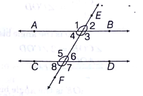
- Properties: - Corresponding angles are equal (e.g., \( \angle 1 = \angle 5 \)). - Alternate interior angles are equal (e.g., \( \angle 3 = \angle 5 \)). - Interior angles on the same side of the transversal are supplementary (e.g., \( \angle 3 + \angle 6 = 180^\circ \)). - Exterior angles on the same side are supplementary (e.g., \( \angle 1 + \angle 8 = 180^\circ \)). - Intercepts by two transversals on three or more parallel lines are proportional. - Example: - Question: - Imagine two parallel lines PQ and RS intersected by a transversal TU at points V and W, respectively. If \( \angle PVW = 40^\circ \), find the measure of the alternate interior angle to \( \angle PVW \). - Solution: - Visualize: - Line PQ is parallel to RS, and transversal TU intersects PQ at V and RS at W, forming angles at V and W. \( \angle PVW \) is an interior angle at V. - Since PQ \(\parallel\) RS, alternate interior angles are equal. The angle at W opposite to \( \angle PVW \) on the other side of the transversal (e.g., \( \angle RWT \)) is the alternate interior angle. - Thus, \( \angle RWT = \angle PVW = 40^\circ \). - Answer is: - The alternate interior angle is \( 40^\circ \). - Angles: - Definition: - An angle is formed when two lines meet at a point, measured in degrees. A full circle is \( 360^\circ \), a straight line is \( 180^\circ \). - Types of Angles: - Acute: - \( 0^\circ < \theta < 90^\circ \). - Right: - \( \theta = 90^\circ \). - Obtuse: - \( 90^\circ < \theta < 180^\circ \). - Straight: - \( \theta = 180^\circ \). - Reflex: - \( 180^\circ < \theta < 360^\circ \). - Complex: - \( \theta = 360^\circ \). - Complementary and Supplementary Angles: - Complementary: -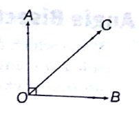
- Sum is \( 90^\circ \) (e.g., complement of \( \theta \) is \( 90^\circ - \theta \)). - Supplementary: -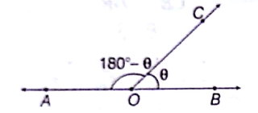
- Sum is \( 180^\circ \) (e.g., supplement of \( \theta \) is \( 180^\circ - \theta \)). - Angle Bisector: -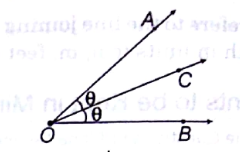
- A line dividing an angle into two equal angles, either internal or external. - Adjacent Angles: -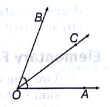
- Angles sharing a common vertex and side, lying on either side of the common side. - Example: - Question: - The supplement of an angle is three times the angle itself. Find the angle. - Solution: - Let the angle be \( x \). - Supplementary angle: - \( 180^\circ - x \). - Given: - \( 180^\circ - x = 3x \). - Solve: - \( 180^\circ = 3x + x \Rightarrow 180^\circ = 4x \Rightarrow x = 45^\circ \). - Answer is: - The angle is \( 45^\circ \). - Triangles: - Definition: - A triangle is a figure formed by three non-collinear points connected by three straight lines, with three sides (e.g., AB, BC, CA) and three angles (e.g., \( \angle A, \angle B, \angle C \)). - Classification: - By sides: - Equilateral: - All sides equal, all angles \( 60^\circ \). - Isosceles: - Two sides equal, angles opposite equal sides equal. - Scalene: - All sides and angles unequal. - By angles: - Acute: - All angles \( < 90^\circ \). - Right: - One angle \( = 90^\circ \). - Obtuse: - One angle \( > 90^\circ, < 180^\circ \). - Properties: - Sum of interior angles: - \( 180^\circ \). - Exterior angle equals sum of opposite interior angles. - Sum of two sides > third side; difference of two sides < third side. - Largest angle opposite longest side; smallest angle opposite shortest side. - Pythagoras theorem (right triangle): - \( a^2 + b^2 = c^2 \), where \( c \) is the hypotenuse. - Congruence of Triangles: - Definition: - Two triangles are said to be congruent if all corresponding sides and angles are exactly equal in measure. - Symbolically written as: - \( \triangle ABC \cong \triangle PQR \) - Conditions for Triangle Congruence (Postulates): - SSS (Side-Side-Side): - All three sides of one triangle are equal to all three sides of another triangle. - Example: - If \( AB = PQ \), \( BC = QR \), \( CA = RP \), then \( \triangle ABC \cong \triangle PQR \). - SAS (Side-Angle-Side): - Two sides and the included angle (angle between those two sides) of one triangle are equal to the corresponding parts of another triangle. - Example: - \( AB = PQ \), \( \angle B = \angle Q \), \( BC = QR \) implies congruence. - ASA (Angle-Side-Angle): - Two angles and the included side of one triangle are equal to those of another triangle. - Example: - \( \angle A = \angle P \), \( AB = PQ \), \( \angle B = \angle Q \). - AAS (Angle-Angle-Side): - Two angles and a non-included side of one triangle are equal to those of another triangle. - RHS (Right angle-Hypotenuse-Side): - Used only for right-angled triangles. - If the hypotenuse and one side are equal in two right-angled triangles, they are congruent. - Notes: - Congruent triangles are exact copies in size and shape. - When triangles are congruent, all corresponding angles and sides are equal. - Congruence does not depend on orientation or position — the triangle can be flipped or rotated. - Similarity: - Two triangles are similar if corresponding angles are equal and sides proportional. - Ratios: - Area ratio = square of side ratio; perimeter ratio = side ratio; altitude/median ratio = side ratio. - Altitudes, Medians, and Bisectors: - Altitude: -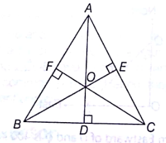
- Perpendicular from a vertex to the opposite side, meeting at the orthocentre. - Median: -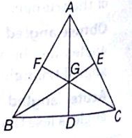
- Line from a vertex to the midpoint of the opposite side, meeting at the centroid (divides median in 2:1 ratio). - Angle Bisector: -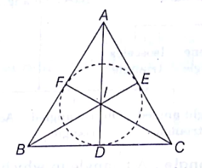
- Divides an angle into two equal angles, meeting at the incentre. - Perpendicular Bisector: -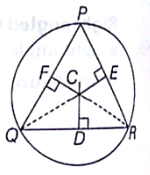
- Line through the midpoint of a side, perpendicular to it, meeting at the circumcentre. - Example: - Question: - In triangle ABC, \( \angle B = 90^\circ \), AB = 3 cm, BC = 4 cm. Find the length of hypotenuse AC and the area of the triangle. - Solution: - Visualize: - Triangle ABC with \( \angle B = 90^\circ \), AB (perpendicular) = 3 cm, BC (base) = 4 cm, AC (hypotenuse). - Pythagoras theorem: - \( AC^2 = AB^2 + BC^2 = 3^2 + 4^2 = 9 + 16 = 25 \Rightarrow AC = \sqrt{25} = 5 \, \text{cm} \). - Area = \( \frac{1}{2} \times \text{base} \times \text{height} = \frac{1}{2} \times BC \times AB = \frac{1}{2} \times 4 \times 3 = 6 \, \text{cm}^2 \). - Answer is: - Hypotenuse AC is 5 cm, and the area is 6 cm². - Quadrilaterals: - Definition: - A quadrilateral is a plane figure bounded by four straight lines, with four sides, vertices, and angles. - Types and Properties: - Parallelogram: - Opposite sides equal and parallel, opposite angles equal, adjacent angles supplementary (\( 180^\circ \)), diagonals bisect each other. - Rectangle: - Parallelogram with adjacent sides perpendicular (\( 90^\circ \)), opposite sides equal, diagonals equal and bisect. - Rhombus: - Parallelogram with all sides equal, diagonals bisect at right angles, opposite angles equal, adjacent angles supplementary. - Square: - Rectangle with all sides equal, diagonals equal and bisect at right angles, all angles \( 90^\circ \). - Trapezium: -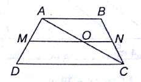
- One pair of opposite sides parallel, line joining midpoints of non-parallel sides equals half the sum of parallel sides. - Example: - Question: - In parallelogram ABCD, AB = 10 cm, AD = 6 cm, and diagonal AC = 12 cm. Find the length of diagonal BD. - Solution: - Visualize: - Quadrilateral ABCD with AB \(\parallel\) CD, AD \(\parallel\) BC, AB = CD = 10 cm, AD = BC = 6 cm, diagonal AC = 12 cm. - In triangle ABC, apply Apollonius theorem: \( AB^2 + BC^2 = 2(BO^2 + AO^2) \), where O is the midpoint of diagonal AC (so AO = OC = \( \frac{12}{2} = 6 \, \text{cm} \)). - Compute: - \( AB^2 = 10^2 = 100 \), \( BC^2 = 6^2 = 36 \), so \( 100 + 36 = 136 = 2(BO^2 + 6^2) = 2(BO^2 + 36) \). - Solve: - \( 136 = 2(BO^2 + 36) \Rightarrow 68 = BO^2 + 36 \Rightarrow BO^2 = 32 \Rightarrow BO = \sqrt{32} = 4\sqrt{2} \). - Diagonal BD = \( 2 \times BO = 2 \times 4\sqrt{2} = 8\sqrt{2} \approx 11.31 \, \text{cm} \). - Answer is: - The length of diagonal BD is approximately 11.31 cm. - Circles: - Definition: - A circle is the locus of points equidistant from a fixed point (centre), with the distance called the radius. - Properties: - Arc: -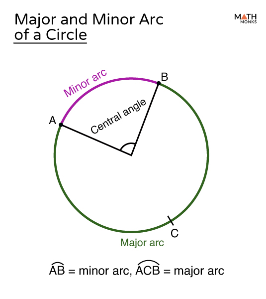
- Portion of the circle’s circumference; equal arcs subtend equal central angles. - Chord: -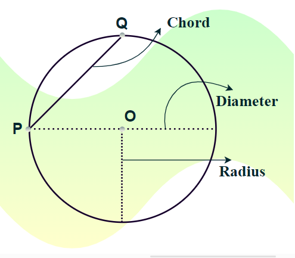
- Line segment joining two points on the circle; equal chords are equidistant from the centre. - Chords in a Circle: - Perpendicular from Centre: - A line drawn from the centre of the circle to a chord bisects the chord if it is perpendicular to it. - Example: - Let chord PQ be in a circle with centre O. - Draw line OM from O perpendicular to PQ such that M is the midpoint of PQ. - Then, OM ⟂ PQ and PM = MQ. - Equal Chords and Distance: - Equal chords are equidistant from the centre of the circle. - Conversely, chords that are equidistant from the centre are equal in length. - Example: - Let chords AB and CD be such that distance from O to AB and O to CD are equal. - Then AB = CD. - Intersecting Chords Theorem: - If two chords AB and CD intersect at point E (internally or externally), then: - \( AE \times EB = DE \times EC \) - Example: - Chords AB and CD intersect at E inside the circle. - AE = 4 cm, EB = 3 cm, then AE × EB = 12. - If DE = 2 cm, then EC = 6 cm since \( 2 \times 6 = 12 \). - Central Angle: -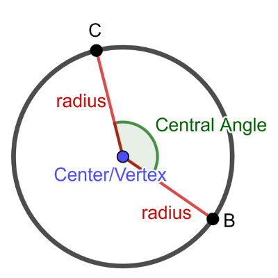
- Angle subtended by an arc at the centre, twice the angle subtended at any point on the remaining circumference. - Tangent: -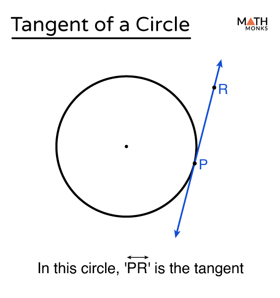
- Line touching the circle at one point, perpendicular to the radius at the point of contact. - Tangent and its Properties: - Tangent-Radius Perpendicularity: - The tangent at any point of a circle is perpendicular to the radius through the point of contact. - Mathematically: - If O is the centre and T is the point of contact, then OT ⊥ PT. - Lengths of Tangents from an External Point: -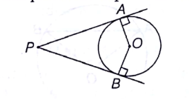
- If two tangents are drawn to a circle from an external point, the lengths of tangents are equal. - Mathematically: - PA = PB, where P is the external point and A, B are points of contact. - Geometrically: - Triangle ΔPAO ≅ ΔPBO by RHS congruency. - Tangent-Secant Theorem (also called the Power of a Point Theorem): -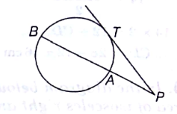
- If PT is a tangent and PAB is a secant, with P being external and A, B being points on the circle, then: - \( PT^2 = PA \times PB \) - Useful to solve questions involving unknown segment lengths. - Angle Between Tangent and Chord: -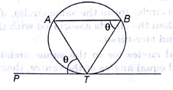
- The angle which a chord makes with a tangent at its point of contact is equal to the angle in the alternate segment. - Mathematically: - ∠PTA = ∠BAT, where AT is the chord and PT is the tangent. - This is known as the Alternate Segment Theorem. - Tangents Between Two Circles: -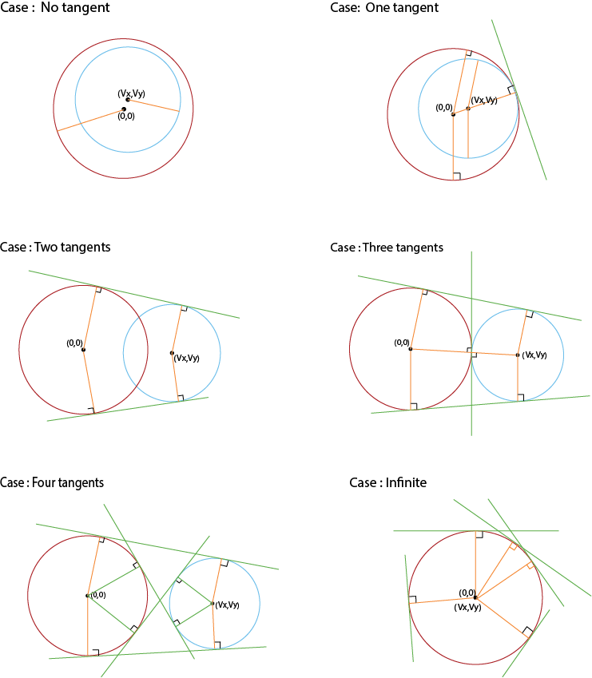
-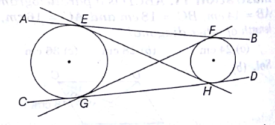
- There are two types of tangents between two circles: - Direct tangents: - do not intersect the line joining centres (e.g., AB and CD). - Transverse (cross) tangents: - intersect the line joining centres (e.g., EH and GF). - Collinearity in Touching Circles: - If two circles touch each other (externally or internally), then the point of contact lies on the straight line joining their centres. - Mathematically: - Points A, C, and B are collinear. - Length of Direct Common Tangent Between Two Circles: - Let the radii of two circles be \( r_1 \) and \( r_2 \), and the distance between centres be \( d \). - Then the length of the direct common tangent: - \( L = \sqrt{d^2 - (r_1 - r_2)^2} \) - Length of Transverse Common Tangent Between Two Circles: - If two circles touch each other externally, and the distance between centres is \( d = r_1 + r_2 \), then: - Length of transverse tangent: - \( L = \sqrt{d^2 - (r_1 + r_2)^2} \) - Secant: -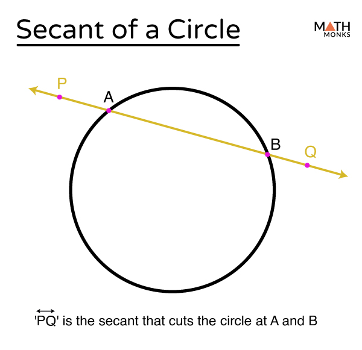
- A secant is a line that intersects a circle at two distinct points. It passes through the interior of the circle, unlike a tangent which touches at only one point. - Cyclic Quadrilateral: -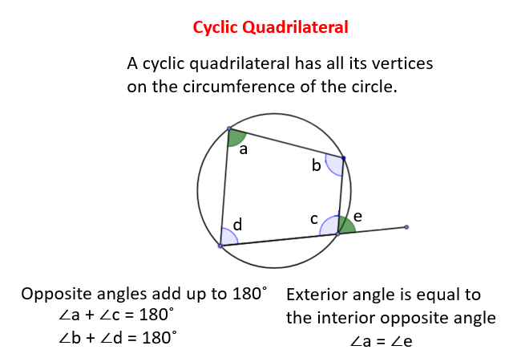
-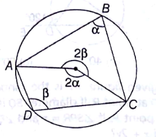
- Quadrilateral with vertices on a circle’s circumference, opposite angles supplementary (\( 180^\circ \)). - Advanced properties are there but not value for money. - Example: - Question: - In a circle with centre O, chord AB subtends \( \angle AOB = 60^\circ \). If the radius is 5 cm, find the length of chord AB. - Solution: - Visualize: - Circle with centre O, radius 5 cm, chord AB forming \( \angle AOB = 60^\circ \). - Triangle AOB is isosceles (OA = OB = 5 cm). Drop perpendicular OM from O to AB, bisecting AB (AM = MB) and \( \angle AOB \) (\( \angle AOM = \angle BOM = 30^\circ \)). - In right triangle AOM: - \( \sin 30^\circ = \frac{AM}{OA} = \frac{AM}{5} \Rightarrow \frac{1}{2} = \frac{AM}{5} \Rightarrow AM = 2.5 \, \text{cm} \). - Chord AB = \( 2 \times AM = 2 \times 2.5 = 5 \, \text{cm} \). - Answer is: - The length of chord AB is 5 cm. - Polygons: - Definition: - A polygon is a closed plane figure bounded by straight lines. Convex polygons have all interior angles \( \leq 180^\circ \); concave polygons have at least one angle \( > 180^\circ \). - Regular Polygon: - All sides and angles equal. - Exterior angle: - \( \frac{360^\circ}{n} \), where \( n \) is the number of sides. - Interior angle: - \( 180^\circ - \text{exterior angle} \). - Sum of interior angles: - \( (2n-4) \times 90^\circ \). - Sum of exterior angles: - \( 360^\circ \). - Number of diagonals: - \( \frac{n(n-3)}{2} \). - Example: - Question: - A regular polygon has an exterior angle of \( 40^\circ \). Find the number of sides and the sum of its interior angles. - Solution: - Exterior angle = \( \frac{360^\circ}{n} \Rightarrow 40^\circ = \frac{360^\circ}{n} \Rightarrow n = \frac{360}{40} = 9 \). - Sum of interior angles = \( (2n-4) \times 90^\circ = (2 \times 9 - 4) \times 90^\circ = 14 \times 90^\circ = 1260^\circ \). - Answer is: - The polygon has 9 sides, and the sum of its interior angles is \( 1260^\circ \). - Statistics: - Basic Concepts: - Definition: - Statistics is the study of collecting, analyzing, interpreting, presenting, and organizing data. It involves designing surveys and experiments to gather data systematically. - Measures of Central Tendency: - Mean, median, and mode summarize a dataset by identifying its central value, providing insights into typical or representative values. - Example: - For marks 10, 20, 30, the mean is \( \frac{10 + 20 + 30}{3} = 20 \), indicating the average performance. - Mean: - Arithmetic Mean (AM): - The sum of all values divided by the number of values. - Ungrouped data: - \( \text{Mean} = \frac{\sum x_i}{n} \), where \( x_i \) are the values and \( n \) is the number of values. - Grouped data: - \( \text{Mean} = \frac{\sum f_i x_i}{\sum f_i} \), where \( f_i \) is the frequency of value \( x_i \). - Assumed Mean Method: - \( \text{Mean} = a + \frac{\sum f_i d_i}{\sum f_i} \), where \( a \) is the assumed mean, \( d_i = x_i - a \). - Property: - \( \sum (x_i - \text{Mean}) = 0 \). - For two numbers \( a, b \): - \( AM = \frac{a + b}{2} \). - Deviation from Mean: - Deviation from the mean is the difference between a value and the arithmetic mean. - For any value \(x\), - Deviation = \(x - \text{Mean}\) - If \(x > \text{Mean}\), deviation is positive (pulls average upward). - If \(x < \text{Mean}\), deviation is negative (pulls average downward). - Additional Property (Balance Property of Mean): - The mean is the balancing point of the data. All the positive deviations (values above the mean) exactly cancel all the negative deviations (values below the mean). - The sum of weighted deviations from the mean is zero: - \( \sum f_i (x_i - \text{Mean}) = 0 \) - Geometric Mean (GM): - For two numbers \( a, b \): - \( GM = \sqrt{ab} \). - For \( n \) numbers: - \( GM = \sqrt[n]{a_1 \cdot a_2 \cdot \ldots \cdot a_n} \). - Harmonic Mean (HM): - For two numbers \( a, b \): - \( HM = \frac{2ab}{a + b} \). - For \( n \) numbers: - \( HM = \frac{n}{\frac{1}{a_1} + \frac{1}{a_2} + \ldots + \frac{1}{a_n}} \). - Relationship: - \( AM \geq GM \geq HM \). - Example: - Question: - The marks of 5 students are 50, 60, 70, 80, 90. Find the arithmetic, geometric, and harmonic means. - Solution: - Arithmetic Mean: - \( AM = \frac{50 + 60 + 70 + 80 + 90}{5} = \frac{350}{5} = 70 \). - Geometric Mean: - \( GM = \sqrt[5]{50 \times 60 \times 70 \times 80 \times 90} \). Compute product: \( 50 \times 60 = 3000 \), \( 3000 \times 70 = 210000 \), \( 210000 \times 80 = 16800000 \), \( 16800000 \times 90 = 1512000000 \). Then, \( GM = (1512000000)^{1/5} \approx 68.97 \) (using approximation for CSAT). - Harmonic Mean: - \( HM = \frac{5}{\frac{1}{50} + \frac{1}{60} + \frac{1}{70} + \frac{1}{80} + \frac{1}{90}} \). Compute: \( \frac{1}{50} = 0.02 \), \( \frac{1}{60} \approx 0.01667 \), \( \frac{1}{70} \approx 0.01429 \), \( \frac{1}{80} = 0.0125 \), \( \frac{1}{90} \approx 0.01111 \). Sum: \( 0.02 + 0.01667 + 0.01429 + 0.0125 + 0.01111 \approx 0.07457 \). Then, \( HM = \frac{5}{0.07457} \approx 67.05 \). - Verify: - \( AM (70) \geq GM (68.97) \geq HM (67.05) \). - Answer is: - AM = 70, GM ≈ 68.97, HM ≈ 67.05. - Median: - Definition: - The median is the middle value when data is arranged in ascending or descending order, dividing the dataset into two equal parts. - Ungrouped Data: - Odd \( n \): - Median = value of the \( \frac{n+1}{2} \)-th term. - Even \( n \): - Median = average of the \( \frac{n}{2} \)-th and \( \frac{n+1}{2} \)-th terms. - Grouped Data: - Median = \( l + \frac{\frac{n}{2} - cf}{f} \times h \), where \( l \) is the lower limit of the median class, \( cf \) is the cumulative frequency of the class preceding the median class, \( f \) is the frequency of the median class, and \( h \) is the class size. - Example: - Question: - Find the median of the data: 12, 15, 18, 20, 22, 25, 30. - Solution: - Number of terms \( n = 7 \) (odd). - Median = value of \( \frac{n+1}{2} \)-th term = \( \frac{7+1}{2} = 4 \)-th term. - Ordered data: - 12, 15, 18, 20, 22, 25, 30. The 4th term is 20. - Answer is: - The median is 20. - Mode: - Definition: - The mode is the value with the highest frequency in the dataset. For ungrouped data, it’s the most frequent value; for grouped data, it’s calculated using the modal class. - Ungrouped Data: - Mode is the value that appears most often. It’s ill-defined if multiple values share the highest frequency or if no value repeats. - Grouped Data: - Mode = \( l + \frac{f_1 - f_0}{2f_1 - f_0 - f_2} \times h \), where \( l \) is the lower limit of the modal class, \( f_1 \) is its frequency, \( f_0 \) is the frequency of the preceding class, \( f_2 \) is the frequency of the succeeding class, and \( h \) is the class size. - Example: - Question: - Find the mode of the following frequency distribution of test scores: -| Class Interval | Frequency |
|---|---|
| 0-10 | 5 |
| 10-20 | 12 |
| 20-30 | 8 |
| 30-40 | 3 |
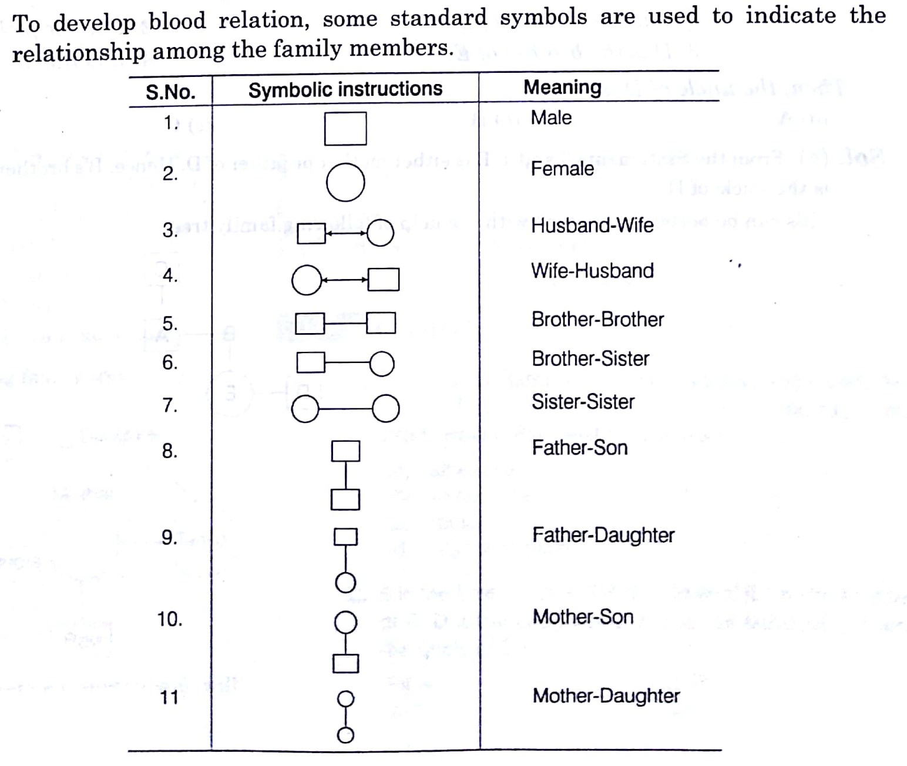
- Relations -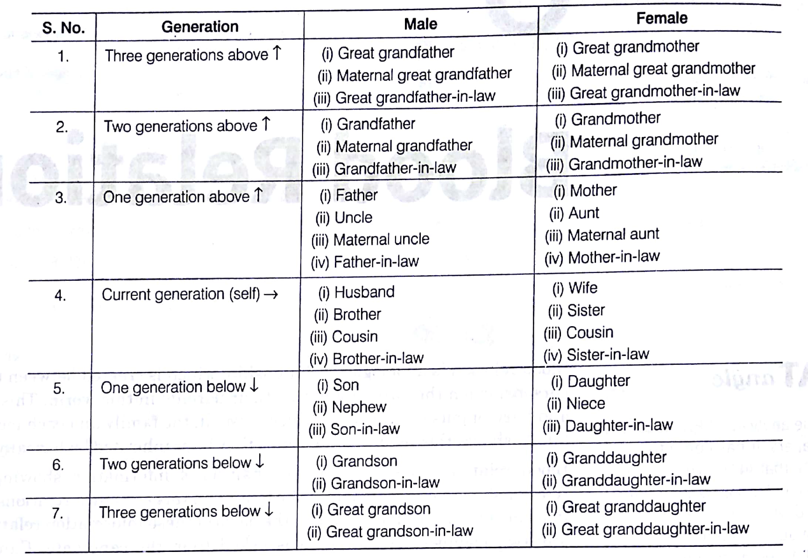
- Dice - Single number is common - Rotate clockwise and write in sequence from common number, the aligning numbers are opposite to each other, while the missing number is opposite to the common number. -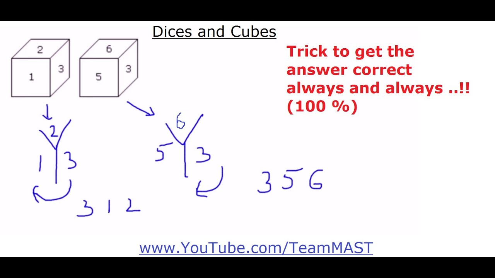
- Two numbers are common - For only two cases - The numbers which are not common between the dice are opposite to each other. In below case 1 and 5 are not common, so 1 is opposite to 5. -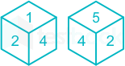
- For more than cases - Need to validate multiple cases among each other on 1 to 1 basis before concluding. -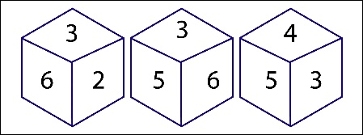
- Open dice - Alternative positions are opposite to each other if they are in straight line -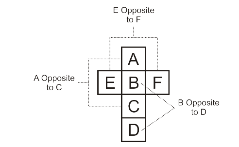
- Ranking - Need to diagrammatically solve these questions in a careful way. Below is an example. -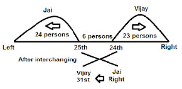
- Missing character - It uses overall logic of analogy with numbers and alphabets. - Pattern/shape recognition - Counting triangles - First count singles, then by combining 2, then combining 3, and so on - Tracing paths - First go by minimum elevation, then keep on raising the state with each iteration - Syllogism - Solve with arrow diagrams, very easy to solve. - Data Interpretation - Involves reading graphs, charts and tables, easy to understand and attempt, uses basic numeracy skills like average, ration, percetage, etc. - Decision making - Involves most balanced and ethical approach to answer the questions. This skill enhances with grasp on ethics and essay writing.